2 OLMo 2 Furious
1 Allen Institute for AI（艾伦人工智能研究所）；2 University of Washington（华盛顿大学）；3 New York University（纽约大学）。
OLMo 2 是团队共同努力的成果。★ 表示核心贡献者。完整作者贡献见此处。
摘要
我们介绍 OLMo 2，即新一代完全开放的语言模型。OLMo 2 包含一个规模为 7B、13B 和 32B 的稠密自回归语言模型系列，完整发布了模型权重、全部训练数据、训练代码与方案、训练日志，以及数千个中间 checkpoint。本文描述我们修改后的模型架构与训练方案，重点介绍提高训练稳定性和每 token 效率的技术。更新后的预训练数据混合引入了一个新的专门数据混合 Dolmino Mix 1124；通过后期课程训练引入它（即在预训练退火阶段使用专门数据），可以显著提升模型在许多下游任务基准上的能力。最后，我们融入 Tülu 3 的最佳实践，开发 OLMo 2-Instruct，着重使用许可宽松的数据，并扩展最终阶段的带有可验证奖励的强化学习（RLVR）。我们的 OLMo 2 基础模型位于性能与训练计算量之间的帕累托前沿，往往以更少的 FLOPs 达到或超过 Llama 3.1、Qwen 2.5 和 Gemma 2 等仅开放权重的模型，而且训练数据、代码和方案完全透明。我们完全开放的 OLMo 2-Instruct 模型能够与规模相当的仅开放权重模型竞争，甚至可与 GPT-3.5 Turbo 和 GPT 4o Mini 等一些专有模型竞争。
原文：OLMo Team，《2 OLMo 2 Furious》，arXiv:2501.00656v3，2025 年 10 月 8 日；首次提交于 2024 年 12 月 31 日。原文采用 CC BY 4.0。本页为中文翻译，图表保留原文。
本页原文链接
- https://huggingface.co/allenai/OLMo-2-1124-7B
- https://huggingface.co/allenai/OLMo-2-1124-13B
- https://huggingface.co/allenai/OLMo-2-0325-32B
- https://huggingface.co/allenai/OLMo-2-1124-7B-Instruct
- https://huggingface.co/allenai/OLMo-2-1124-13B-Instruct
- https://huggingface.co/allenai/OLMo-2-0325-32B-Instruct
- https://huggingface.co/datasets/allenai/olmo-mix-1124
- https://huggingface.co/datasets/allenai/dolmino-mix-1124
- https://huggingface.co/datasets/allenai/tulu-3-sft-olmo-2-mixture
- https://huggingface.co/datasets/allenai/tulu-3-sft-olmo-2-mixture-0225
- https://huggingface.co/datasets/allenai/olmo-2-1124-7b-preference-mix
- https://huggingface.co/datasets/allenai/olmo-2-1124-13b-preference-mix
- https://huggingface.co/datasets/allenai/olmo-2-0325-32b-preference-mix
- https://huggingface.co/datasets/allenai/RLVR-GSM-MATH-IF-Mixed-Constraints
- https://github.com/allenai/OLMo
- https://github.com/allenai/OLMo-core
- https://github.com/allenai/open-instruct
- https://github.com/allenai/olmes
- https://github.com/allenai/dolma
- https://api.wandb.ai/links/ai2-llm/fjn0v0ec
- https://api.wandb.ai/links/ai2-llm/ypmumwpc
- https://www.comet.com/ai2/olmo-2-0325-32b/reports/olmo-2-0325-32b?shareable=WhT37Wy7jqttDoy6ysDBumQzf
- https://playground.allenai.org/
- https://arxiv.org/abs/2501.00656v3
目录
- 1 引言 · 3
- 2 OLMo 2 系列 · 4
- 2.1 模型架构 · 4
- 2.2 Tokenizer · 5
- 2.3 基础模型训练方案 · 6
- 2.4 基础模型数据 · 7
- 2.5 评测与结果 · 8
- 3 深入分析：预训练稳定性 · 10
- 3.1 重复 n-gram · 12
- 3.2 模型初始化 · 13
- 3.3 架构改进 · 15
- 3.4 超参数改进 · 17
- 4 深入分析：中期训练方案 · 18
- 4.1 学习率退火 · 18
- 4.2 数据课程：Dolmino Mix 1124 · 19
- 4.3 Dolmino Mix 1124：高质量来源 · 20
- 4.4 Dolmino Mix 1124：数学混合 · 23
- 4.5 最终中期训练混合与 checkpoint soups · 25
- 5 深入分析：后训练流程 · 26
- 6 深入分析：基础设施作为研究催化剂 · 30
- 6.1 集群 · 31
- 6.2 Beaker · 32
- 6.3 稳定性与运维 · 33
- 6.4 最大化硬件利用率 · 33
- 6.5 环境影响 · 35
- A OLMo 2 评测框架 · 48
- A.1 基础模型评测 · 48
- A.2 指令模型评测 · 49
- B OLMo 2 1B · 49
- B.1 OLMo 2 1B 的困难 · 49
- C 补充指令模型细节 · 52
- C.1 补充超参数 · 52
- C.2 补充 RLVR 学习曲线 · 52
- C.3 OLMo 2-Instruct 预览模型 · 52
- D 补充超参数 · 56
- E 退火数据细节 · 58
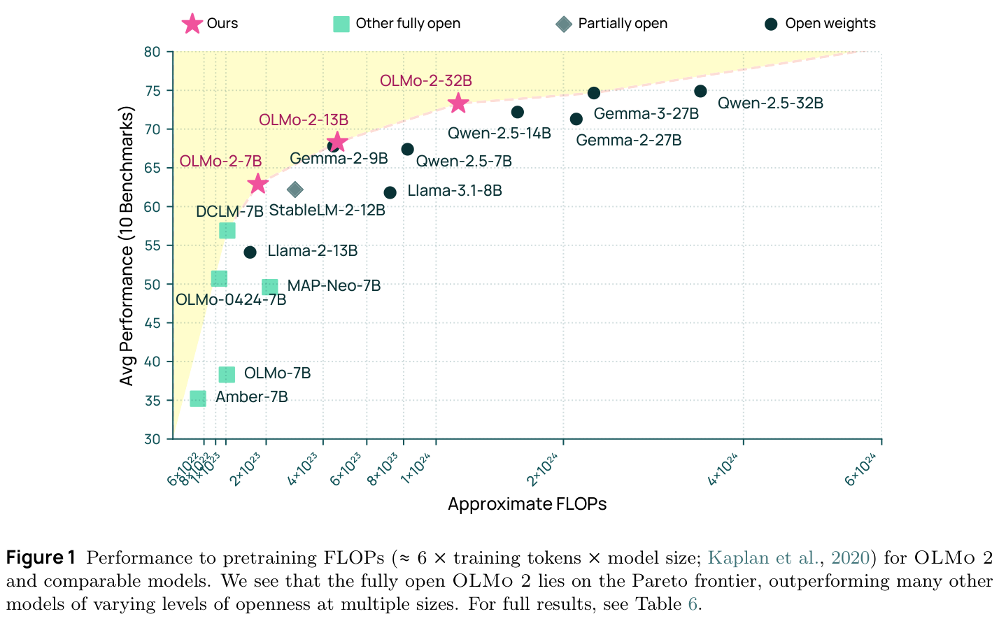
1 引言
过去一年，开放语言模型生态系统迅速发展。我们看到，成熟开发者发布的开放权重模型大量涌现——Llama 3（Grattafiori et al., 2024）、DBRX（Databricks, 2024）、Yi 1.5（Young et al., 2024）、Qwen 2（Yang et al., 2024a）、Falcon（TII, 2024a,b）、Mistral（Mistral, 2024a）、Ministral（Mistral, 2024b）、Phi（Abdin et al., 2024a,b）——新参与者也推出了 Gemma（Gemma Team et al., 2024a,b; Team et al., 2025）、Grok（X.AI, 2023）、Command R（Cohere, 2024a,c,b），大幅缩小了公开可用系统与封闭系统之间的差距（Cottier et al., 2024）。然而，这些开放权重模型只是复杂语言模型方案和开发流程的最终产物，单靠它们不足以支持有关语言模型行为和用途的多样化研究。
为此，包括我们最初的 OLMo（Groeneveld et al., 2024）、Pythia（Biderman et al., 2023）、Amber（Liu et al., 2023c）、DCLM（Li et al., 2024）、MAP Neo（Zhang et al., 2024a）和 SmolLM（Allal et al., 2024a,b）在内的此前工作采用了完全开放的方法，不仅发布模型权重，也发布训练数据、训练代码和详实的方案文档，以支持复现。完全开放的语言建模工作所发布的产物，在研究语言模型的训练动态（Land and Bartolo, 2024; Jin and Ren, 2024）、概念获取（Chang et al., 2024）和记忆（Antoniades et al., 2024; Shaib et al., 2024）方面发挥了关键作用。尽管有这些进展，已报告性能最好的模型与开放模型之间仍然存在差距。
现代语言模型开发是一个迭代过程：当前迭代的局限推动后续开发。我们此前发布的版本（OLMo-0424; Ai2, 2024）着重通过更好的预训练数据混合和课程，提高关键任务（如 MMLU）的表现。本技术报告介绍 OLMo 2，一个包含 7B、13B 和 32B 模型的新系列，最多训练 6T tokens。在英语学术基准上，这些模型能够与开放权重的 Llama 3.1、Qwen 2.5 和 Gemma 2 系列竞争（图 1）。我们进一步应用 Tülu 3 方案（Lambert et al., 2024），验证预训练模型是下游后训练的有效基础模型。由此得到的模型系列称为 OLMo 2-Instruct，能够与强大的仅开放权重模型竞争，甚至可与 GPT-3.5 Turbo 和 GPT 4o Mini 等一些流行的专有模型竞争。本技术报告重点讨论〔接下一页〕
〔接上一页〕我们在开发 OLMo 2 时重点关注的四个领域：
- 预训练稳定性。语言模型训练经常受到训练不稳定和 loss spike 的困扰，它们代价高昂，而且已知会损害模型最终表现。我们讨论用于提高训练稳定性的技术，这对于确保最终训练模型的表现至关重要（§3）。
- 中期训练方案。OLMo-0424（Ai2, 2024）、DBRX（Databricks, 2024）和 Llama 3（Grattafiori et al., 2024）展示了数据课程对预训练的价值，Blakeney et al.（2024）对此进行了讨论。我们讨论将预训练划分为两个阶段的优势，其中后一中期训练阶段用于注入新知识并补足能力缺陷。此外，我们展示如何利用一种称为微退火的技术，独立评估中期训练的数据来源，以降低实验成本（§4）。
- 后训练流程。成功的基础模型应具备的关键能力，是能够通过微调适应下游使用场景。我们介绍基于 Tülu 3 方案（Lambert et al., 2024）构建的 OLMo 2-Instruct，并展示基础模型的改进如何转化为更好的聊天版本。我们着重使用许可宽松的数据，并将 RLVR 流程扩展为多个阶段，以最大化性能（§5）。
- 基础设施作为研究催化剂。高性能、可靠的基础设施对于成功预训练至关重要；然而，许多预训练论文没有讨论训练技术栈，或略过了关键细节。我们讨论相较 OLMo-0424 所做的、支持 OLMo 2 改进的变化，以及投入用于监控和编排基础设施的解决方案，如何帮助我们降低故障率、提高集群利用率（§6）。
除了这些深入分析，我们在 §2 描述完整的模型开发过程：训练数据、预训练、后训练和评测。在适当处，我们突出相较 OLMo 1 和 OLMo-0424 的变化，并引用相关项目，例如利用 scaling laws 高效估计模型下游性能的工作（Bhagia et al., 2024），以及通过 OLMES 评测框架实现基准标准化的工作（Gu et al., 2024）。
2 OLMo 2 系列
本节概述 OLMo 2，并突出相较 OLMo-0424 和此前 OLMo 模型的改进1。与 OLMo-0424 相比，OLMo 2 系列使用更多 tokens、更多参数，并在下游任务上取得更好的结果。我们解释了在让先进语言模型可供使用这一使命下，取得有竞争力结果所需的关键细节。因此，我们尽可能以 Apache 2.0 许可开放发布全部训练代码、数据和方案；其余内容则采用可获得的最宽松许可。
2.1 模型架构
表 1 概述了 OLMo 系列在多次迭代中的架构演变。下面给出细节：
我们采用基于 Vaswani et al.（2017）的仅解码器 transformer 架构，并提供表 3 所述的 7B、13B 和 32B 参数版本。我们的架构与初代 OLMo（Groeneveld et al., 2024）非常相似，但做了一些变化以提高训练稳定性（见 §3）和性能。最初的 OLMo 对仅解码器 transformer 架构（Vaswani et al., 2017）进行了以下修改：
- 无偏置：架构中排除所有偏置项（Groeneveld et al., 2024; Chowdhery et al., 2022 等）。
- SwiGLU 激活函数：我们使用 SwiGLU 激活函数（Shazeer, 2020），将对应隐藏维度设为约 \(\frac{8}{3}d\)，但向上增加到最近的 128 的倍数（7B 模型为 11,008），〔接下一页〕
1 相较 OLMo 1 和 OLMo-0424 的模型架构变化见 §2.1；数据和训练方案的概述分别见 Groeneveld et al.（2024）和 Ai2（2024）。
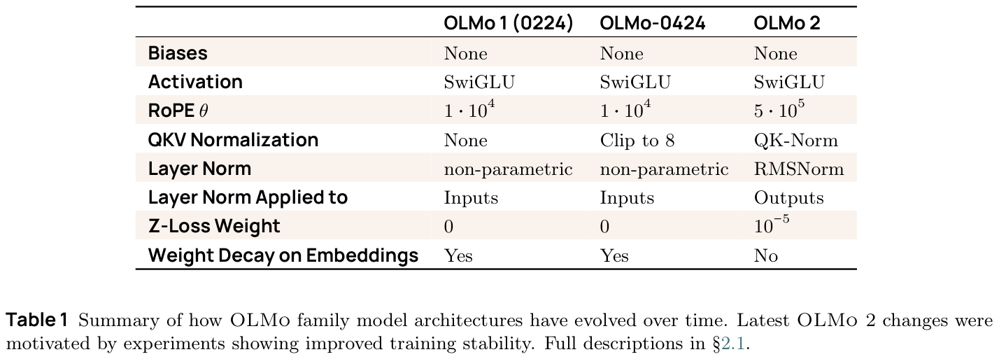
〔接上一页〕以提高吞吐量。
- 旋转位置 embeddings（RoPE）：我们以旋转位置 embeddings（RoPE; Su et al., 2021）替代绝对位置 embeddings。
在构建 OLMo-0424 时，我们为训练稳定性和下游性能做了以下修改：
- QKV 裁剪：用于提高训练稳定性，DBRX（Databricks, 2024）也采用了这一做法。
- 增加上下文：从 2048 增加到 4096。
最后，本文介绍的 OLMo 2 做了进一步修改：
- RMSNorm：我们使用无偏置项的 RMSNorm（Zhang and Sennrich, 2019），它是 LayerNorm（Ba et al., 2016）的变体，用它替代非参数化 LayerNorm 来归一化激活。
- 调整归一化顺序：我们在每个 transformer 块内部对 attention 和前馈（MLP）层的输出进行归一化，替代对输入的归一化。因此每个块的公式变为：
其中，\(x\) 是层的输入，\(h\) 是中间隐藏状态，\(h_{\mathrm{out}}\) 是输出。该策略最初由 Liu et al.（2021）提出，用于稳定训练。
- QK-Norm：遵循 Dehghani et al.（2023b），我们在计算 attention 前，使用 RMSNorm 对 key 和 query 投影进行归一化。这能避免 attention logits 过大，过大的值可能导致训练损失发散。
- Z-Loss：遵循 Chowdhery et al.（2022）、Chameleon Team（2024）和 Wortsman et al.（2023），我们采用 z-loss 正则化，因为实验表明它能提高训练稳定性。
- RoPE \(\theta=5\mathrm{e}5\)：我们将 RoPE \(\theta\) 从 10,000 提高到 500,000。这一方法提高位置编码的分辨率，与 Grattafiori et al.（2024）一致。
2.2 Tokenizer
OLMo 1 和 OLMo-0424 使用修改版 GPT-NeoX-20B tokenizer（Black et al., 2022）训练，其中包含特殊 tokens |||PHONE_NUMBER|||、|||EMAIL_ADDRESS||| 和 |||IP_ADDRESS|||，用于掩蔽个人身份信息。
按照 Tao et al.（2024）的建议，我们为 OLMo 2 使用更大的 tokenizer 词表。我们借用 cl100k 的预分词器和词表；该 tokenizer 是为 GPT-3.5（OpenAI, 2023a）和 GPT-4（OpenAI, 2023b）开发的，采用 Apache 2.0 许可2。为保持与早期〔接下一页〕
〔接上一页〕Dolma 数据来源的向后兼容性，我们添加了此前 OLMo 模型中使用的相同掩蔽 tokens3。
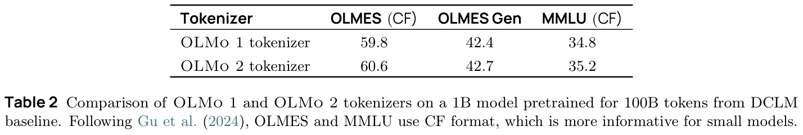
表 2 在较小规模上比较这两个 tokenizer。我们看到，切换到新 tokenizer 带来了可测量的收益，尤其是在 OLMES 任务上。按照 Tao et al.（2024），在这一模型规模和计算预算下，较大的 OLMo 2 tokenizer 略处劣势；我们预计，在更大规模和训练更多 tokens 的模型上，更大词表带来的提升会更加明显。
2.3 基础模型训练方案
遵循此前 OLMo 模型以及课程学习的近期进展（Blakeney et al., 2024; Ibrahim et al., 2024），基础 OLMo 2 模型分两个阶段训练，各自使用对应的数据混合。第一预训练阶段最长（占训练 FLOPs 的至少 90%），主要使用网络来源的数据。在该阶段，我们利用其他近期开放数据发布，对高质量网络数据预训练混合进行迭代。在第二阶段，我们称之为中期训练（占训练 FLOPs 的 5–10%），提高最高质量网络文档和整理过的非网络来源的采样比例；我们还使用专门制作的合成数据，以补足模型的数学能力。
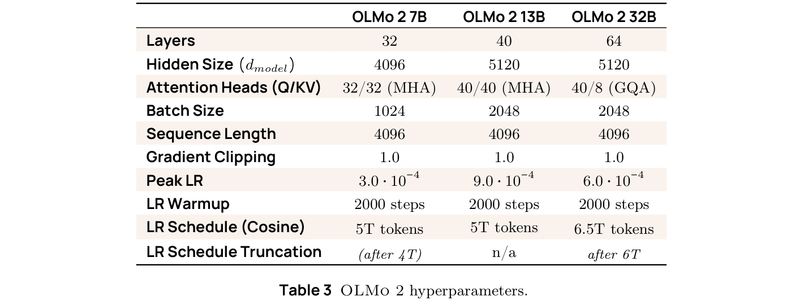
阶段 1：预训练。第一阶段——预训练——最长，占训练 FLOPs 的 90–95%。表 3 报告关键架构与训练细节。关键细节包括：受同期 Qwen 3（Yang et al., 2025）使用方式启发，为扩展 32B 模型，我们从 MHA 切换到 GQA（Ainslie et al., 2023）。OLMo 2 训练使用均值为 0、标准差为 0.02 的截断正态分布进行随机初始化；学习率调度在 2000 步内将学习率从 0 warmup 到峰值，然后进行余弦衰减，校准为在指定最大 token 数之后达到峰值学习率的 10%。
阶段 2：中期训练。我们将较短的第二阶段称为中期训练（占训练 FLOPs 的 5–10%），在训练剩余长度内将学习率线性衰减至零4。
3 具体而言，|||IP_ADDRESS||| 等 tokens 出现在 Dolma 数据集的早期子集中。我们选择将它们保留在词表中，这样在对这些较早来源进行分词时，它们不会被拆成多个 tokens。
4 多阶段自监督训练的概念并不新（例如 Gururangan et al., 2020），但我们从 Abdin et al.（2024a）和 OpenAI（2024）采用了“中期训练”这一术语。
我们整理了一个较小、专门的数据混合——Dolmino Mix 1124——通过增加 STEM 参考资料和高质量文本的接触，让模型获得领域知识，以及初始预训练后仍然欠缺的技能（如数学解题能力）。我们提高高质量网络文档和整理过的非网络来源的采样比例；还使用专门制作的合成数据，以补足模型的数学能力。
模型合并或“Souping”。为充分利用这些高质量数据并找到更好的局部极小值，我们使用不同的随机数据顺序，多次执行这一步骤，然后对得到的模型取平均（Matena and Raffel, 2022; Wortsman et al., 2022）。对于 OLMo 2 7B，我们分别退火三次，每次 50B tokens，采用不同的随机数据顺序；对得到的模型取平均，产生最终模型。对于 OLMo 2 13B 和 OLMo 2 32B，均分别训练三次，每次 100B tokens（更新步数与 7B 相同），随后第四次训练 300B tokens。最终模型是四个模型的平均。更多细节见 §4。
总体情况。总计，OLMo 2 7B 训练 4.05 万亿 tokens（预训练阶段 3.90 万亿），OLMo 2 13B 训练 5.6 万亿 tokens（预训练阶段 5 万亿），OLMo 2 32B 训练 6.6 万亿 tokens（预训练阶段 6.06 万亿）。
2.4 基础模型数据
本节简要概述预训练与中期训练的数据混合。
2.4.1 预训练数据：OLMo 2 Mix 1124
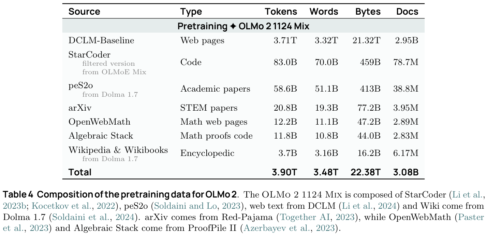
该阶段使用的混合见表 4。它包含约 3.9 万亿 tokens，其中超过 95% 来自网络数据。我们将这一集合称为 OLMo 2 Mix 1124。它与 OLMoE（Muennighoff et al., 2024）使用的预训练数据相同：我们组合 DCLM（Li et al., 2024）与 Dolma 1.7（Soldaini et al., 2024）的数据。DCLM 使用“baseline 1.0”混合5。Dolma 使用 arXiv（Together AI, 2023）、OpenWebMath（Paster et al., 2023）、Algebraic Stack、peS2o（Soldaini and Lo, 2023）以及 Wikipedia 子集。arXiv、OpenWebMath 和 Algebraic Stack 最初属于 ProofPile II（Azerbayev et al., 2023）。最后，我们纳入 StarCoder（Li et al., 2023b）的代码，其来自 GitHub 上采用宽松许可的仓库（Kocetkov et al., 2022）。为纳入质量更高的代码，我们删除来自 GitHub 上少于 2 个 stars 的仓库的所有文档。此外，通过人工检查这一来源，我们发现它包含以二进制格式编码或主要包含数字〔接下一页〕
5 可在 mlfoundations/dclm-baseline-1.0 获取。
〔接上一页〕内容的文档；为去除它们，我们丢弃最常见单词占全文超过 30%，或最常见两个单词占全文超过 50% 的文档。为缓解可能的训练 loss spike，我们删除包含连续重复 32 次或更多次 n-gram 序列的文档。我们在 §3.1 报告细节并展示这一干预的效果。
2.4.2 中期训练数据：Dolmino Mix 1124
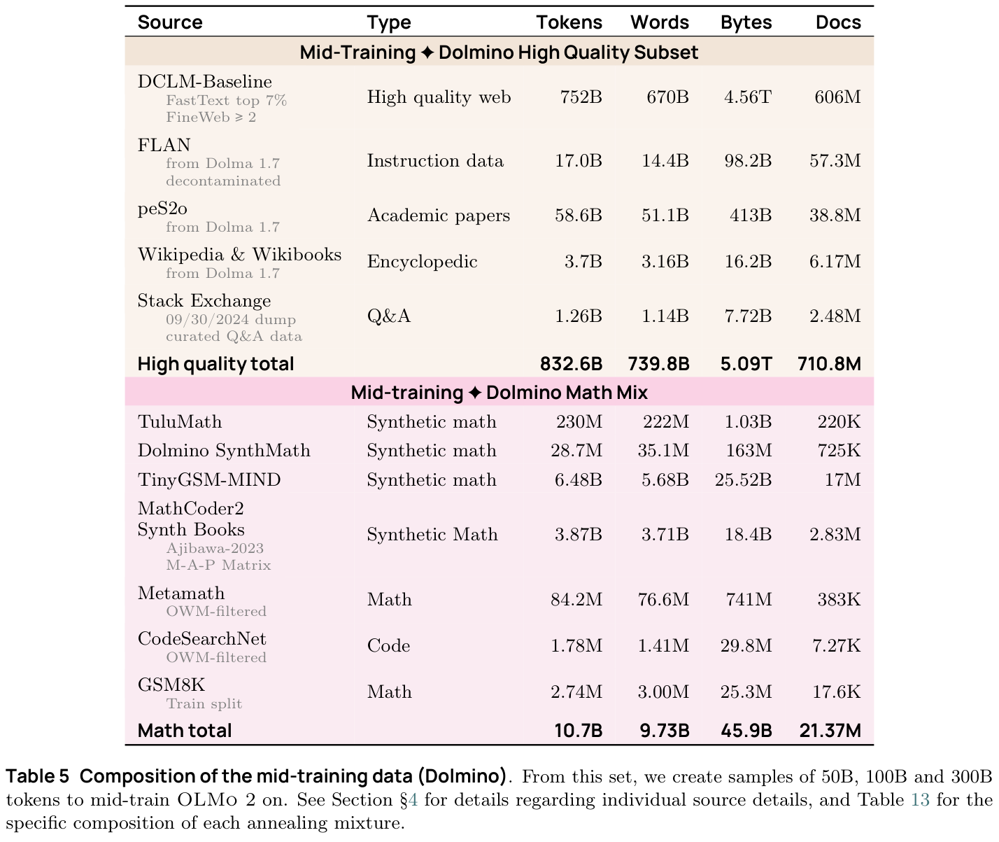
在主要使用网络数据完成初始预训练阶段之后，我们进一步训练，使用经过更严格质量过滤的网络数据和一组领域特定高质量数据的混合，其中许多数据是合成的。这一混合旨在让模型获得以数学为核心的技能，并集中接触 STEM 参考资料和高质量文本。我们生成规模各异的多个混合版本，但总体将其称为 Dolmino Mix 1124。用于抽样构建 Dolmino Mix 1124 的基础来源见表 5。读者可参阅 §4，其中深入介绍我们为这一混合开展实验和整理数据的过程。
2.5 评测与结果
OLMo 2 通过标准语言模型基准进行评测。此外，我们对 OLMo 2 进行后训练，并在多样化任务集上评测得到的 OLMo 2-Instruct，以评估基础模型的适配潜力。
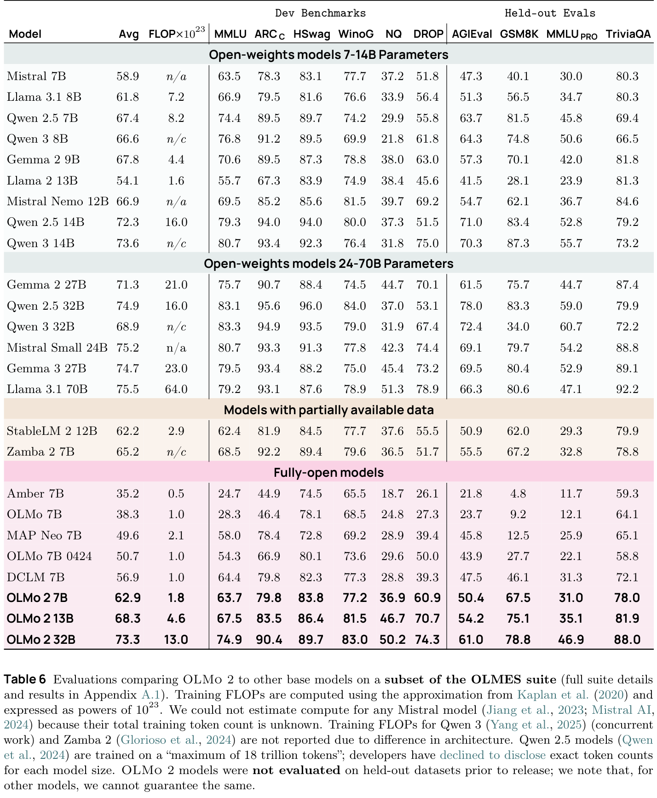
基础模型评测：我们使用 OLMES 评测套件（Gu et al., 2024）评测 OLMo 2 和其他基线模型；套件包括多项选择与生成任务的一系列基准数据集，采用标准化提示和上下文示例进行 few-shot 预测。基准任务的完整说明见附录 A.1。对多项选择任务，我们评测准确率；对生成任务，我们评测 F1，以考虑部分匹配。此外，为避免方案对这些基准过拟合，〔接下一页〕
〔接上一页〕我们保留了一组未用于模型开发决策的留出任务；我们倡导模型开发者将声明开发评测任务与留出评测任务作为标准实践6。
表 6 给出总体结果。我们发现，尽管 OLMo 2 所需训练 FLOPs 少得多（见图 1），且保持完全开放（如训练数据），它仍能与规模相当的最佳开放权重模型竞争。开发指标上的收益大体转化到了未见过的评测套件上，表明训练方案具有泛化能力。
总体而言，我们发现开发指标上的收益大体转化到了未见过的评测套件上。当然，无法保证我们在 OLMo 2 开发中视为未见的任务，不属于所比较的其他模型的开发集。尽管如此，我们认为模型开发者保留一部分未见评测任务，并在技术报告中说明它们，应成为标准实践。此外，我们鼓励其他开放权重模型开发者，明确说明模型开发期间监测了哪些任务。
后训练方案与评测。后训练采用我们的 Tülu 3（Lambert et al., 2024）方案，包括 SFT、on-policy 偏好调优和 RLVR7。得到的 OLMo 2-Instruct 模型在表 7 中评测一般与精确指令遵循、数学、知识推理和安全任务，使用与 Lambert et al.（2024）相同的评测套件。基准任务的完整说明见附录 A.2。
表 7 给出下游结果。我们发现 OLMo 2-Instruct 能够与最佳指令调优开放权重模型竞争，甚至可与一些流行的专有模型竞争。这展示了 OLMo 2 作为强大基础模型的价值，它为完全开放的后训练研究提供了优秀起点。完整后训练细节见 §5。
3 深入分析：预训练稳定性
虽然 OLMo-0424 的性能达到其计算预算下的预期范围，训练动态却存在几项问题：
- 训练期间损失突然出现尖峰，而 gradient 范数出现尖峰更为频繁。实验中我们发现，增加模型规模会提高尖峰频率。此外，实验揭示，更剧烈的 gradient 范数尖峰通常先于训练 loss spike 出现。
- 整个训练过程中 gradient 范数的大小缓慢增长。这与 gradient 范数（及训练损失）尖峰频率的增加相关。
最终，这些问题共同导致训练发散，使更大规模训练无法进行。这促使我们开展训练稳定性调查，研究问题成因与缓解措施。图 2 展示采用缓解措施前后的训练曲线，措施概述如下：
- 重复 n-gram：过滤预训练数据，去除其中的重复 n-gram，因为它们可能导致 loss spike（§3.1）。
- 初始化：从缩放初始化（Zhang et al., 2019）切换为对所有参数采用均值为 0、标准差为 0.02 的初始化（§3.2）。
- RMSNorm：使用 LayerNorm 的 RMSNorm 变体来归一化激活，替代非参数化 LayerNorm（§3.3.2）。
- 调整归一化顺序：在每个 transformer 块中归一化 attention 与前馈（MLP）层的输出，替代输入（§3.3.2）。
6 GSM8k（Cobbe et al., 2021）仅部分留出，因为在发现预训练后数学能力较差时，我们从 1319 个 GSM8k 示例中抽取 200 个，用于中期训练数据开发；将该开发集称为 \(\mathrm{GSM}^{*}\)。其余 1119 个 GSM8k 示例保留为留出集，只报告最终在这些示例上的性能。
7 我们对偏好数据做了小幅修改，以使用许可宽松模型的生成结果，并增加多阶段 RLVR 训练协议来优化最终性能，其他部分则原样遵循该方案。
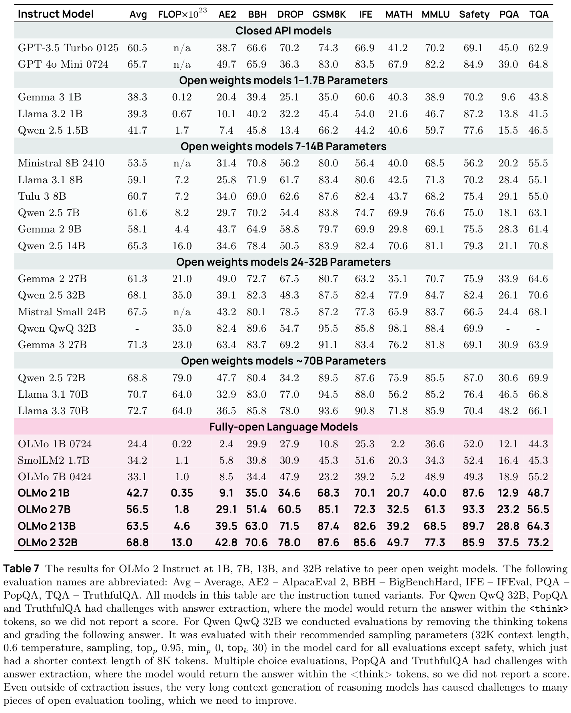
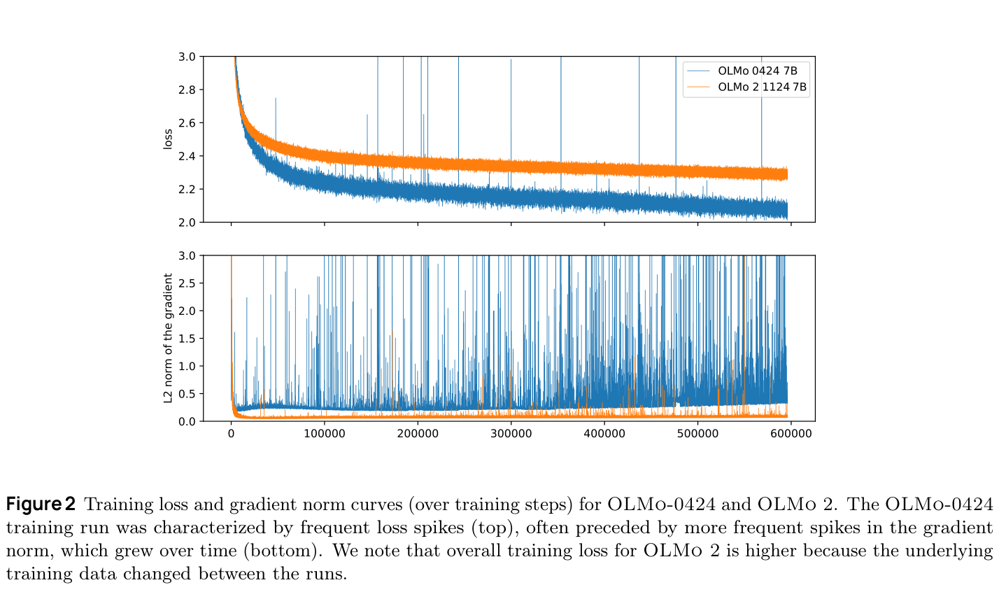
- QK-Norm：在计算 attention 前，使用 RMSNorm 对 key 和 query 投影进行归一化（§3.3.2）。
- Z-Loss：采用 z-loss 正则化，它是使最终输出 logits 不会增长得过大的正则项（§3.3.3）。
- 权重衰减：将 embeddings 排除在权重衰减之外（§3.4.2）。
- AdamW 中的 \(\epsilon\)：将 AdamW 的 \(\epsilon\) 从 \(10^{-5}\) 降低到 \(10^{-8}\)（§3.4.1）。
下文讨论促成这些干预的实验与结果。我们将修订后的策略与 OLMo-0424 比较，后者是模型权重、数据和文档完全开放的最新 OLMo 版本。
3.1 重复 n-gram
数据可能同时造成 gradient 范数尖峰和 loss spike。在调查发生尖峰的训练 batch 时，我们发现包含长重复 n-gram 序列的样本非常普遍。下面是这类序列的三个例子：
g4ODg4ODg4ODg4ODg4ODg4ODg4ODg4ODg4ODg4ODg4ODg4ODg4ODg4OD... [\n 365, 0, 667, 1000, 1000, 667, 667, 667, 667, 667, ... ’ 255, 255, 255, 255, 255, 255, 255, 255, \n255, 255, ...
在一系列实验中，我们发现这些序列通常与尖峰相关，但这一关系并非确定性的：
- 相同 n-gram 序列可能让较大模型出现尖峰，却不会让基于相同数据训练的较小模型出现尖峰。
- 相同 n-gram 序列可能在某种训练数据顺序下引起尖峰，但重新打乱数据之后不会。
- 与尖峰相关的相同 n-gram 序列，也可能出现在训练中的其他 batch 中，而这些 batch 没有产生尖峰。
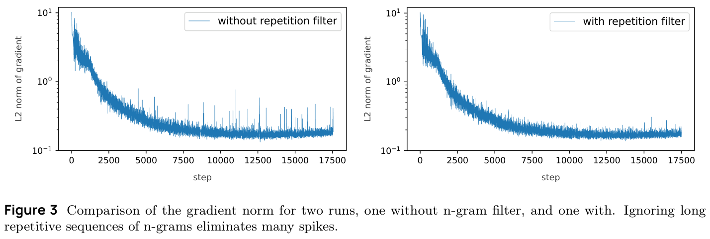
尽管如此，我们发现了证据：在训练数据中广泛移除这类序列，平均会降低尖峰频率。整理数据时（§2.4），我们应用过滤器，删除包含连续重复 32 次或更多次 n-gram 序列的所有文档，其中 n-gram 是任意长度为 1 到 13 tokens 的片段。我们还在训练器中实现额外保障，在数据加载期间检测这些序列，并在计算损失时掩蔽它们。图 3 展示对包含重复 n-gram 的输入序列进行损失掩蔽的效果。这种干预显著缓解了 gradient 尖峰，但没有完全消除。它对 gradient 范数缓慢增长没有影响。
3.2 模型初始化
图 4 展示 OLMo 2 初始化方案带来的训练稳定性提升。在 OLMo 2 中，我们从均值为 0、标准差为 0.02 的正态分布初始化每个参数。相比之下，OLMo-0424 的初始化最初由 Zhang et al.（2019）提出，并由 Gururangan et al.（2023）实现：在每层中，对输入投影按 \(1/\sqrt{d_{\mathrm{model}}}\) 缩放，对输出投影按 \(1/\sqrt{2\cdot d_{\mathrm{model}}\cdot\mathrm{layer\_idx}}\) 缩放。换言之，较后层的初始值更小。
我们开展多项分析来研究初始化的影响，表明 OLMo 2 初始化优于 OLMo-0424 初始化。实证分析表明，它更好地保持了跨层激活与 gradient 的尺度，使深层模型训练更稳定，并表现出与不同宽度模型之间超参数迁移相关的性质。这两项性质共同让我们相信，深层模型可以稳定训练，且较小模型的初始化超参数可以迁移到更大规模。
Gradient 与激活增长。训练深层网络的一个根本问题，是确保激活与 gradient 不会跨层爆炸或消失，导致学习不稳定或停滞。我们希望它们的尺度在各层之间大致保持不变。受近期相关工作（Cowsik et al., 2024）启发，我们依据不同候选初始化对跨层激活与 gradient 的 2-范数的影响来评估它们。具体而言，随机初始化一个模型，将 The Pile（Gao et al., 2021）中 50 个随机文档输入模型，收集初始层和最终层的激活与 gradient（损失对激活的 gradient），忽略 embeddings。随后在文档与时间步上对这些张量取平均，在初始层得到向量 \(\mathbf{v}\)，在最终层得到 \(\mathbf{v}'\)，二者长度均为 \(d_{\mathrm{model}}\)。最后，计算以下跨层扩张或收缩度量，称为增长指数：
我们对激活和 gradient 都计算 \(\lambda\)。理想情况下，两个 \(\lambda\) 都保持接近 0，表明激活与 gradient 不会跨层爆炸或消失。图 5 将不同随机初始化模型的增长指数绘为宽度的函数（4096 对应完整的 7B 模型）。
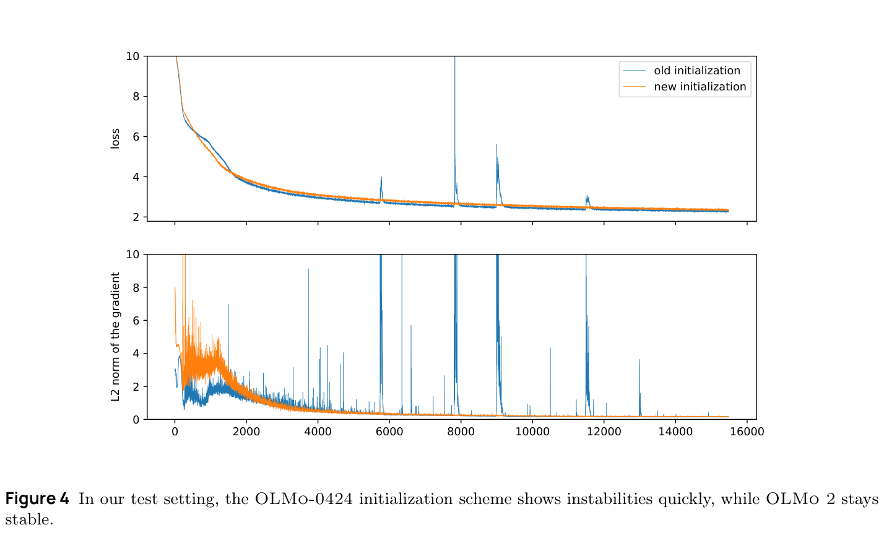
关键是，在各个模型宽度下，OLMo 2 的增长指数都比 OLMo-0424 更接近 0。这表明，低精度训练深层模型时，OLMo 2 初始化会更稳定，因为相较原有 OLMo-0424 初始化，其激活与 gradient 都更能抵抗跨层爆炸或消失。
跨宽度超参数迁移。新初始化另一项吸引人的性质，是它随着宽度（\(d_{\mathrm{model}}\)）缩放激活与 gradient 范数的方式，被理论研究认为对不同宽度之间的超参数迁移很重要。具体而言，Yang et al.（2024b）提出，跨宽度超参数迁移的一个充分条件，是每个激活标量值及其更新量（学习率乘以 gradient）的大小，在宽度增加时保持固定。等价地，激活及其更新向量的范数应与 \(\sqrt{d_{\mathrm{model}}}\) 正相关。图 6 绘出初始化时的激活和 gradient 范数相对于 \(\sqrt{d_{\mathrm{model}}}\) 的关系。关键是，OLMo 2 的 gradient 范数与 \(\sqrt{d_{\mathrm{model}}}\) 的正相关，比 OLMo-0424 更强。结合 Yang et al.（2024b），这表明，在初始学习率与模型宽度无关时，新 OLMo 2 初始化比 OLMo-0424 初始化更能在不同宽度模型之间迁移。
尖峰分数。由于当代绘图工具难以帮助理解快速尖峰，我们计算尖峰分数作为客观度量。具体而言，将尖峰分数定义为时间序列中偏离最近 1,000 个值的滚动平均至少七个标准差的值所占百分比8。我们主要将尖峰分数用于训练损失与 gradient 的 L2 范数，但它可以用于任意时间序列。
实证结果。为开展初始化实验，我们先建立一个能快速复现尖峰的基线训练。主要做法是缩短 warmup 时间。效果立刻出现且非常明显（图 4），并持续存在于不同模型规模和 token 数量下。在消融实验中，新初始化没有 loss spike，gradient 的 L2 范数尖峰分数从 0.40 降到 0.03。新初始化收敛稍慢；我们通过改进其他超参数设置弥补这一差异（§3.4）。
8 尖峰分数在概念上与 Karpathy（2024）提出的尖峰缓解相似。
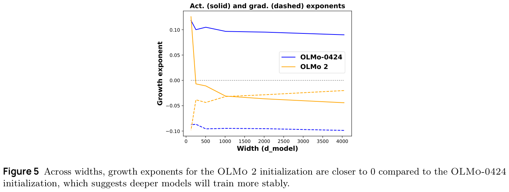
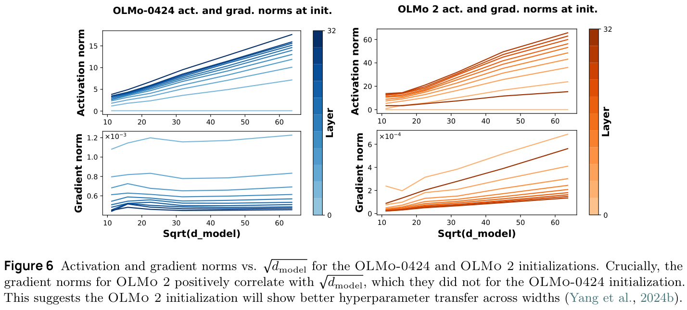
3.3 架构改进
3.3.1 非参数化层归一化与 RMSNorm
OLMo 2 使用 RMSNorm，这是大多数 transformer 实现中的标准做法。OLMo-0424 为提高性能，并绕过所用库中的缺陷，采用了非参数化层归一化；但开发 OLMo 2 时，这些缺陷已不再是问题，硬件也更快，我们希望采用稳妥的方法。消融实验显示二者没有差异，因此改回 RMSNorm。
3.3.2 调整归一化顺序与 QK-Norm
图 7 展示对 MLP 与 attention 块的输出进行层归一化，替代对输入进行归一化的效果。我们进一步在 attention 块中的 query 和 key 上应用另一个归一化，同样采用 RMSNorm。单独使用时，两项变化都没有好效果，但结合起来能够同时改善 gradient 的 L2 范数的增长和尖峰程度。下表概述层归一化位置的差异：
\(x\) 是层的输入，\(h\) 是中间隐藏状态，\(h_{\mathrm{out}}\) 是输出。
Liu et al.（2021）首次提出调整层归一化顺序的想法。随后 Chameleon Team（2024）采用了它。QK-Norm 最初由 Dehghani et al.（2023a）开发。
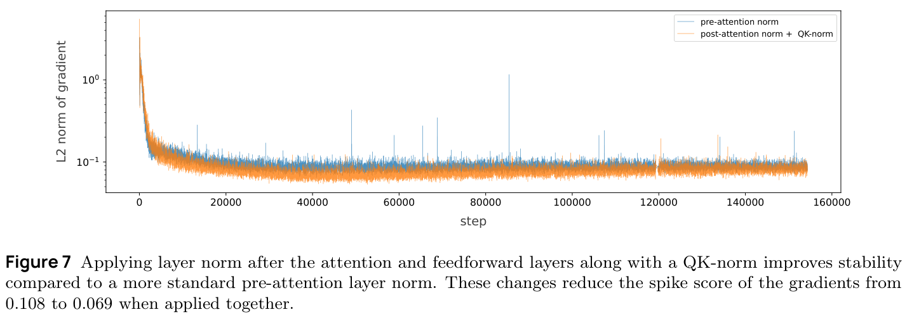
3.3.3 Z-Loss
遵循 Chowdhery et al.（2022）、Chameleon Team（2024）与 Wortsman et al.（2023），我们通过在损失函数中添加 \(10^{-4}\cdot\log^{2}Z\) 来施加 z-loss 正则化，其中 \(Z\) 是对 logits 进行 softmax 时的分母。这抑制最终 softmax 中的激活增长得过大，提高模型稳定性。
图 8 展示流行的 Flash Attention 库（Dao, 2024）中的 z-loss 实现，与仅使用 Python 基础操作的实现之间的明显差异。除了其闻名的 attention 机制，Flash Attention 还提供优化的交叉熵损失实现，其中包含一个版本的 z-loss。为在不兼容 Flash Attention 的设置中保留灵活性，我们另有一个用 PyTorch 编写的实现。两种实现在前向传播中产生相同结果，但反向传播行为不同。我们怀疑根因在于精度差异。在实验中，这不影响训练期间的交叉熵损失，也不影响模型在下游任务上的表现。然而，出于充分谨慎，我们放弃采用自定义 z-loss 实现的分支，从最初分叉点重新训练。训练过程中无法安全切换实现，因此尽可能避免这样做。
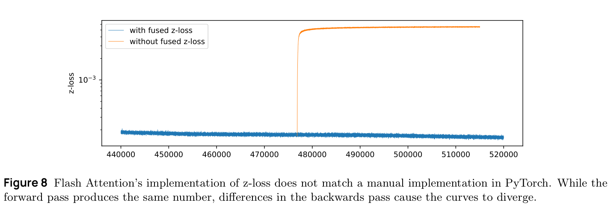
3.4 超参数改进
3.4.1 AdamW 中的 \(\epsilon\)
图 9 展示将 AdamW 的 \(\epsilon\) 从 \(10^{-5}\) 降至 \(10^{-8}\) 的结果。\(10^{-8}\) 是 PyTorch 默认值，但一些流行语言模型训练代码库的默认值为 \(10^{-5}\)。较低的值允许训练早期进行更大更新，帮助模型在我们通常观察到大量不稳定的时期更快学习。因此，gradient 范数更快稳定下来，并持续保持在较低水平。
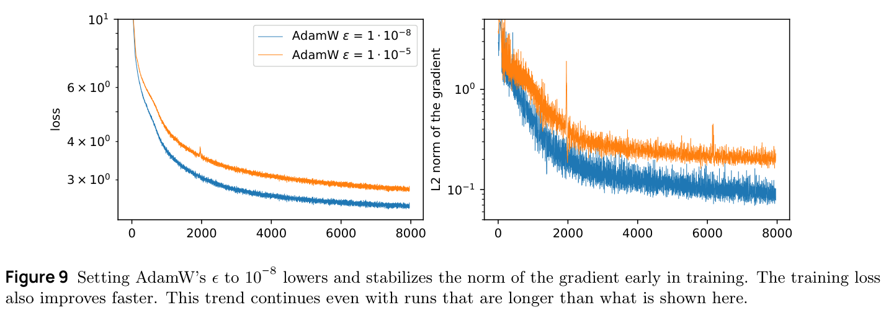
3.4.2 Embeddings 上的权重衰减
图 10 展示将 embeddings 排除在权重衰减之外之后，训练动态的变化。OLMo 使用标准权重衰减形式，每步将每个参数乘以 \(1-(0.1\cdot\mathrm{lr})\)。该正则项抑制参数增长得过大，但对 token embeddings 而言矫枉过正，导致 embeddings 非常小。Takase et al.（2024）讨论过，小 embeddings 可在早期层中产生大 gradient，因为 layer_norm(x) 对 \(x\) 的雅可比与 \(\|x\|\) 成反比，而早期层中 residual stream 的范数实质上就是 embeddings 的范数。我们实验了 Takase et al.（2024）讨论的所有补救方法，却发现它们影响收敛速度。因此，我们简单地关闭 embeddings 的权重衰减，观察到随着训练推进，embedding 范数稳定在健康范围内。
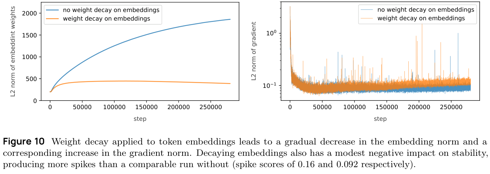
4 深入分析：中期训练方案
近期工作表明，多阶段基础模型训练可带来可测量的能力提升（Blakeney et al., 2024; Ibrahim et al., 2024; Feng et al., 2024）。在此前 OLMo 迭代中，我们也发现学习率调度（OLMo 1; Groeneveld et al., 2024）和数据混合（OLMo-0424; Ai2, 2024）均起到重要作用。我们将模型开发这一阶段的干预称为中期训练9。
整体看，我们的方法很简单：预训练阶段之后，生成领域特定数据混合，重新启动训练，将学习率线性降至零。目标是注入专门知识并改善能力；通过 GSM8K 等数学专项任务这样的关键基准获取改进反馈。
4.1 学习率退火
学习率实验以 Grattafiori et al.（2024）的设置为起点。为初始化 7B 版本的优化器状态，我们在前 2000 步内将学习率线性 warmup 到峰值 \(3\cdot10^{-4}\)。随后在 5T tokens 上采用标准余弦衰减。此前 OLMo-0424 的经验表明，可以截去余弦衰减调度的最后一段，替换为线性衰减至零，而性能损失很小。因此，对 7B 版本，我们在 4T tokens 时停止该调度，然后转入 §4 所述的中期训练。13B 一开始就采用较高峰值学习率，因此决定先训练至 5T tokens，再进入中期训练阶段。
图 11 展示使用另外四个学习率值的训练：\(6\cdot10^{-4}\)、\(9\cdot10^{-4}\)、\(12\cdot10^{-4}\) 和 \(30\cdot10^{-4}\)。具体而言，我们尝试了原始学习率的两倍、三倍、四倍、10 倍和 30 倍。最后一种 \(30\cdot10^{-4}\)，在学习率 warmup 期间就出现训练不稳定，多次 loss spike 未能完全恢复，因此很快放弃。其他值训练正常，并表现出有趣模式。单看训练损失，较高学习率普遍在早期更好（只要避免 loss spike），但较低学习率设置最终会超过其他设置（图 11）。尤其是比较 \(3\cdot10^{-4}\) 与 \(6\cdot10^{-4}\) 时，交叉点远在 200B tokens 之后。较短的超参数实验可能得出错误结论。
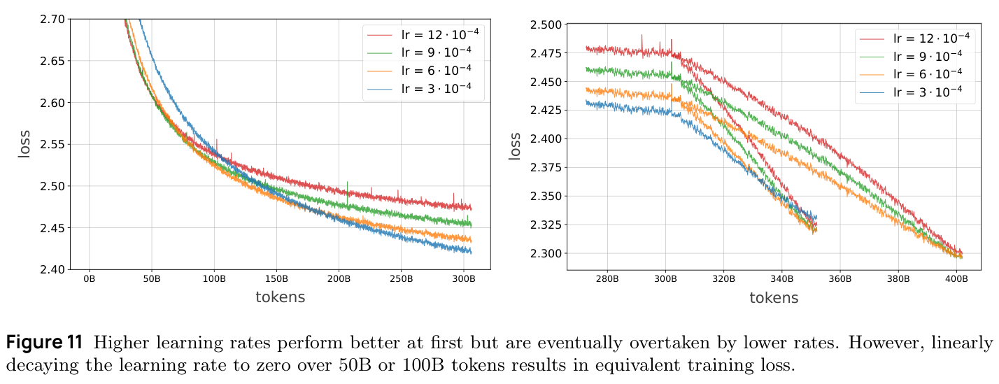
这组实验的动机之一，是确定较高学习率是否让退火步骤更有效。猜想是，预训练期间较差的训练损失，在学习率衰减至零时会得到补偿。为检验这一假设，我们从四个版本中各取训练 300B tokens 后的 checkpoint，并在 50B tokens 内将学习率衰减至零。考虑到较高学习率的效果可能需要更多步骤才能显现，我们对三个较高设置尝试在 100B tokens 内衰减学习率，总共七项实验。结果表明，〔接下一页〕
9 将多个自监督训练阶段串联的概念并不新（例如 Gururangan et al., 2020），但我们将“中期训练”的使用追溯到 Abdin et al.（2024a）与 OpenAI（2024）。
〔接上一页〕较高学习率确实使中期训练更有效，但提升幅度恰好抵消预训练变差的幅度。四个版本在流程结束时训练损失相同，不过最低设置略落后于其他设置。
表 8 表明，在更长训练中结果也一致。我们取 \(3\cdot10^{-4}\) 和 \(6\cdot10^{-4}\) 两个版本，在训练 1T 和 2T tokens 后重复实验。选择它们，是因为前者是 Grattafiori et al.（2024）的基线，后者以微弱优势取得最佳训练损失。结果显示，两种设置几乎没有差异，无论训练损失还是表 8 中 OLMES 套件（Gu et al., 2024）的九项下游任务混合。下游任务评测噪声更大，但与仅依据训练损失的发现一致。
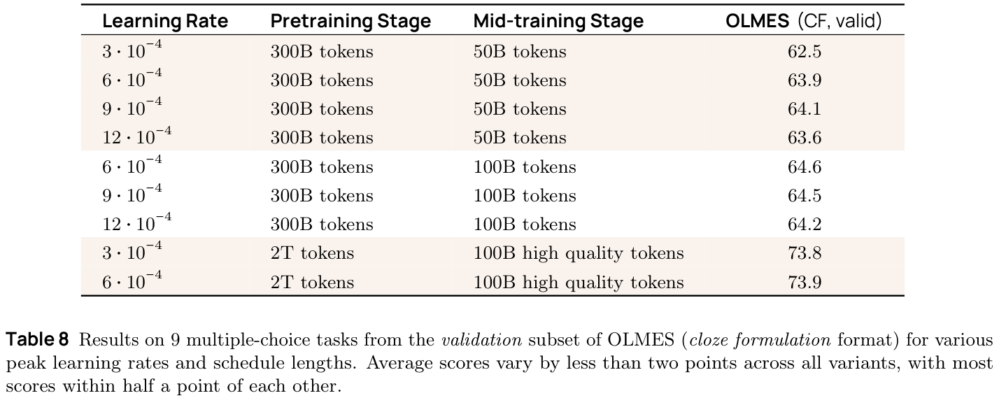
最后，我们希望确定，在切换到更高质量数据时，预训练阶段较高学习率是否会使中期训练更有效。为在可用计算预算内尽量匹配实际训练设置，我们采用相同的两种设置（\(3\cdot10^{-4}\) 和 \(6\cdot10^{-4}\)），在 100B 高质量 tokens 内将学习率线性降至 0。结果再次显示差异很小。OLMES 评测套件最终分数相差不超过 0.1 分。然而，其他指标可能揭示两种设置间有意义的差异。这一高质量 token 混合专门针对数学，在不属于 OLMES 套件的 GSM8K 上，高学习率设置比低学习率高 2.8 分。要将这一有趣数据点变为可靠结论，还需要更多研究。
这一发现与“学习率越高总是越好”或“学习曲线下的面积很重要”等机器学习经验说法（McCandlish et al., 2018）相矛盾。它扩展了 Wortsman et al.（2023）的研究：他们观察到，在余弦调度训练结束时，小模型的性能在跨越数个数量级的学习率范围内基本不变；还发现我们同样采用的 QK-Norm（§3.3.2）和 z-loss（§3.3.3）会增强这一效果。我们发现，这些结果在大得多的 token 和参数规模下仍成立，而且对我们的训练而言至关重要的是，在修改后的学习率调度下也成立。
出于成本考虑，我们未探索完整的学习率范围。这是该系列实验的主要局限。开展更广泛学习率搜索，准确界定我们似乎正处于的训练平台区间边界，会很有价值。
4.2 数据课程：Dolmino Mix 1124
本节描述整理中期训练数据的实验过程。我们将所得数据集和为这一中期训练阶段创建的混合，统称为 Dolmino Mix 1124。其内容概览见 §2.4（表 5）。具体而言，中期训练方案采用以下流程：
- 找出一组高质量来源的混合，提高整个开发基准套件上的表现（§4.3）。
- 为补足特定能力（对 OLMo 2 而言具体是数学），收集并评估领域特定数据集，在中期训练中混入（§4.4）。我们发现，这些来源可通过我们称为微退火的技术独立评估（§4.4.2）；与其他来源混合后，其效果仍然存在。
- 遵循 §4.1 的实验，在三种 token 预算（50B、100B、300B）下混合高质量来源与数学专项数据。较小混合用于 OLMo 2 7B 中期训练，OLMo 2 13B 和 32B 在较大混合上退火。对 OLMo 2 7B、13B 和 32B，我们均发现：对使用相同混合、不同数据顺序随机种子训练的不同 checkpoint 权重取平均，始终优于单独 checkpoint（§4.5）。为在小规模上展示这一点，还纳入了接受与 7B 模型类似干预的 1B 模型结果。
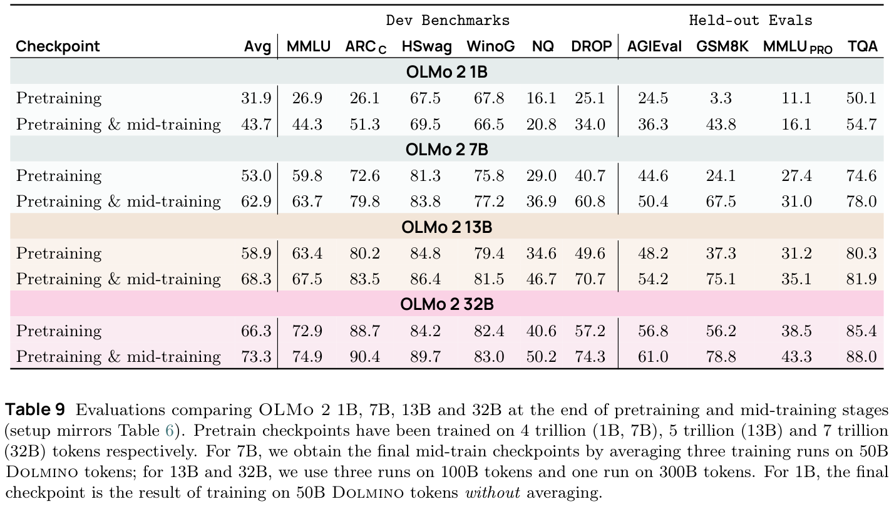
表 9 概述中期训练对开发和留出评测的显著影响。OLMo 2 7B 平均提升 10.6 分，超过仅完成预训练阶段的更大 13B 模型。OLMo 2 13B 同样受益，平均性能提升 10.3 分。两种模型都在知识密集型多项选择基准（ARC Challenge：7B 为 72.6 → 79.8，13B 为 80.2 → 83.5；MMLU：7B 为 59.8 → 63.7，13B 为 63.4 → 67.5；AGIEval：7B 为 44.6 → 50.4，13B 为 48.2 → 54.2）、阅读理解基准（Natural Questions：7B 为 29.0 → 36.9，13B 为 34.6 → 46.7；DROP：7B 为 40.7 → 60.8，13B 为 49.6 → 70.7）和数学技能基准（GSM8K：7B 为 24.1 → 67.5，13B 为 37.3 → 75.1）上得到提升。
4.3 Dolmino Mix 1124：高质量来源
遵循前一 OLMo 迭代（Ai2, 2024）的方案，我们先整理预训练混合中质量更高的子集，再用更多学术与百科材料扩充。具体考虑以下来源（概述见表 10）：
高质量网络数据。为过滤预训练使用的网络子集，我们实验了两种现有质量分类器：
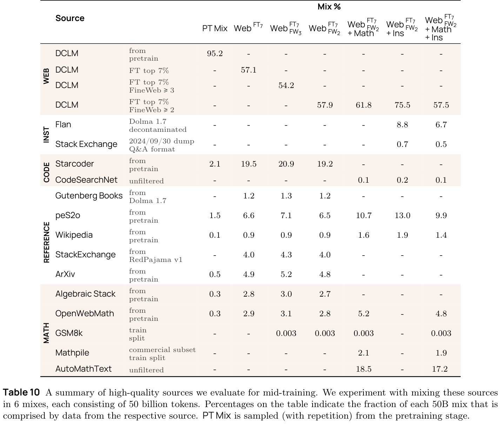
- Li et al.（2024）的 FastText 分类器。为训练该模型10，Li 等人从 ELI5（Fan et al., 2019）的 Reddit 子集，以及 Open Hermes 2.511 的示范中抽取正例文档。负例从 DCLM 流程中随机抽样。
- Penedo et al.（2024）的 FineWeb Edu 分类器。该模型12基于 Arctic Embed M13 编码器（Merrick et al., 2024），使用超过 400,000 个由 Llama 3 70B Instruct 标注的网页14微调。分类器依据文档与学术主题的相关程度及内容的完善程度，给出 0 到 5 分。
遵循 Li et al.（2024），我们对 DCLM FastText 分类器使用阈值 0.03311014，保留约 65.6% 的网络子集。我们结合这一过滤器与 FineWeb Edu 分类器分数，实验了保留分数超过 3 的文档（保留 5.8%），以及更宽松的阈值 2（保留 20.3%）。
指令数据与问答对。我们使用 Dolma 1.7（Soldaini et al., 2024）中的相同 FLAN 子集（Wei et al., 2021; Longpre et al., 2023）。为消除该来源的数据污染，我们提取评测套件（§2.5）中所有任务的训练、验证、〔接下一页〕
10 mlfoundations/fasttext-oh-eli5。
11 datasets/teknium/OpenHermes-2.5。
12 HuggingFaceFW/fineweb-edu-classifier。
13 Snowflake/snowflake-arctic-embed-m。
14 datasets/HuggingFaceFW/fineweb-edu-llama3-annotations。
〔接上一页〕和测试样本，删除与任一任务样本存在 10% 或更多 n-gram 重叠的 FLAN 文档。
我们从 Stack Exchange 网络获取问答对，该网络由面向各种主题的 186 个论坛组成。其内容采用多种对商业使用友好的 Creative Commons 许可。我们使用写作时最新的数据库转储（2024 年 9 月 30 日），由 Internet Archive 发布15。过滤后只保留有被采纳答案的问题；进一步移除问题得票少于 3 或答案得票少于 5 的问答对。过滤后，将问题与答案拼接，使用的换行序列比问题或答案中最长换行序列多一个 \n。
代码。我们评估保留与预训练相同的代码子集；此外，考虑更小、经过整理、与自然监督交错的代码来源，例如 CodeSearchNet（Husain et al., 2019）的 docstrings；前述 StackExchange 问答对也包含代码。
学术、百科与其他参考内容。我们从 Dolma 1.7（Soldaini et al., 2024）获取高质量非网络数据集。包括 peS2o（Soldaini and Lo, 2023）、Wikipedia 与 Wikibooks、Gutenberg 图书、arXiv 与 StackExchange（来自 Red-Pajama v1; Together AI, 2023）、Algebraic Stack（ProofPile II; Azerbayev et al., 2023）。
数学。在开发 Dolmino Mix 1124 数学子集（§4.4）的同时，我们考虑了初步数学子集，以衡量数学文档如何与混合中的非数学部分结合。具体使用 OpenWebMath（Paster et al., 2023）、GSM8K 的训练集（Cobbe et al., 2021）、MathPile（Wang et al., 2023b）许可宽松的“商业”子集中的训练集，以及 AutoMathText（Zhang et al., 2024b）。
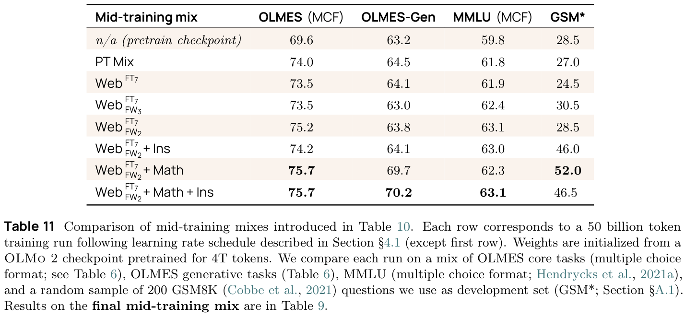
表 10 各混合的结果概述于表 11。所有结果都对应 50B tokens 中期训练，从一个已预训练 4T tokens 的 7B 模型 checkpoint 初始化。
如 §4.1 所述，我们发现仅学习率退火（PT Mix）就使各项平均指标明显提升（OLMES +4.4；OLMES-Gen +1.3；MMLU +20），但数学开发集没有提升（\(\mathrm{GSM}^{*}\) −1.5）。切换到含更高质量网络数据与参考内容的混合，进一步提高性能：Web FT7FW2 相较 PT Mix，OLMES 再提高 1.2 分，MMLU 再提高 1.3 分；OLMES-Gen 略差（−0.4），\(\mathrm{GSM}^{*}\) 的变化在误差范围内（+1.5）。最后，在混合中加入指令数据〔接下一页〕
〔接上一页〕和数学来源，得到最佳性能。Web FT7FW2 + Math + Ins 混合取得最佳总体结果，OLMES +1.7、生成任务 +5.7、MMLU +1.3、\(\mathrm{GSM}^{*}\) +19.5。我们注意到，Web FT7FW2 + Math 混合在数学任务上略好，这促使我们在 §4.4 研究能与其他高质量来源良好结合的更好数学子集。
4.4 Dolmino Mix 1124：数学混合
早期中期训练混合（表 11 中仅包含 Web 的各行）显示，模型在数学相关基准上表现吃力。因此，提高这些数据集上的性能，是中期训练研究的重点。我们研究人工编写与合成生成或增强的数据；后者通过迭代过程获得，旨在修复数学验证集中的常见错误。
§4.4.1 描述数据来源及其生成或过滤过程；随后 §4.4.2 详细介绍微退火，即用于确定最终数学来源的实验技术。所得混合概述于表 5。
4.4.1 数学来源
TuluMath。我们遵循 Chan et al.（2024）近期提出的基于角色的方法，生成数学合成数据。核心想法是使用不同角色（例如“专注神经网络的机器学习研究者”）与数据合成提示（例如“创建一道数学题”），引导语言模型从对应视角合成数据。具体而言，以 Persona Hub（Chan et al., 2024）中可用角色为条件，生成针对数学题的提示，既包括需要高阶数学技能的题，也包括小学题。我们通过 zero-shot 提示 GPT-4o16，生成独特且针对指定输入角色的问题。生成问题后，再使用 GPT-4o 生成多步数学解答。生成问题与解答的具体提示见附录图 24、25。总计收集约 230M 数学合成 tokens。
DolminoSynthMath。这是一组 28M 数学合成 tokens，专门用于提升 GSM8K 与基础数学计算表现。它由三部分组成：首先生成 11M tokens 的基本数学问答对，如“77 * 14 = 1078”，为每个问答对搭配多种提示。我们发现，加入这些数据能够显著缓解推理时模型在单个 CoT 推理步骤中的错误。其次，纳入自定义的 7,924 个 GSM8K 合成示例，通过读取 GSM8K 训练示例，并替换所给问题和答案中的所有数字生成，希望借此向模型提供信号，使其从文字题中提取计算图，忽略不相关的语义特征。最后，对每个 GSM8K 训练示例进行 MIND 重写（Akter et al., 2024），合成数据由 Qwen2.5-7B-Instruct（Qwen et al., 2024）生成。
TinyGSM-MIND。我们从 Tiny-GSM（Liu et al., 2023a）的重写版本生成约 6.5B tokens 数学合成数据。Tiny-GSM 包含 11M 个类似 GSM8K 的合成问题，答案以 Python 代码形式提供。过滤后只保留代码可执行且仅包含变量赋值语句的答案。随后，为代码中每一行赋值操作标注结果变量的数值。再将所有这些标注示例交给 Qwen2.5-7B-Instruct，使用“Two Students”和“Problem Solving”提示，以 MIND（Akter et al., 2024）风格重写。
MathCoder2-Synthetic。我们仿照 MathCoder2（Lu et al., 2024）的合成数据生成过程，过滤开源仓库中的现有合成数据。具体而言，从 HuggingFace 用户 Ajibawa-202317,18 与 M-A-P Matrix 数据集中收集合成教科书，并进一步过滤。我们训练 FastText 分类器的具体方式如下：请 GPT-4o 将 10,000 个〔接下一页〕
16 2024-08-06。
17 datasets/ajibawa-2023/Maths-College。
18 datasets/ajibawa-2023/Education-College-Students。
〔接上一页〕OpenWebMath 示例（Paster et al., 2023）标注为数学相关或非数学相关；用它们作为 FastText 分类器的正例和负例。将分类器应用于合成教科书，只保留数学相关内容。
ProofPile OWM-Filtered。我们使用上一步生成的相同 OpenWebMath 过滤器，将其应用于 Metamath（Yu et al., 2023）与 CodeSearchNet（Husain et al., 2019）。
GSM8K-Train。最后，我们纳入 GSM8K（Cobbe et al., 2021）的训练集。
4.4.2 用微退火评估数学数据
为从所有可用和合成数学数据中选取质量最高的子集，我们开展一系列微退火，即针对小型数学子集的退火训练。微退火的一般方案如下：
- 确定希望评估数据质量的一个来源，或一小组数学来源；
- 从通用数据混合（如 DCLM）中收集与数学来源大致相同数量的数据，确保高质量网络文本与领域特定数学数据混合；
- 像退火训练一样训练这一 50/50 混合，确保以适合这组较少数据的速率，将学习率线性降低。
这一过程使我们能够用完整退火训练成本的一小部分，评估单个来源的质量。总计开展 19 次独立微退火，总 token 数为 130B，少于 3 次完整的 50B 退火训练。作为成本对照，这 19 次微退火全部所需的计算，少于 7B 模型用于 souping 的三次 50B token 训练。更明确地说，它能在更细的数据来源粒度上展示提升，训练不到 10B tokens 就能看到结果。
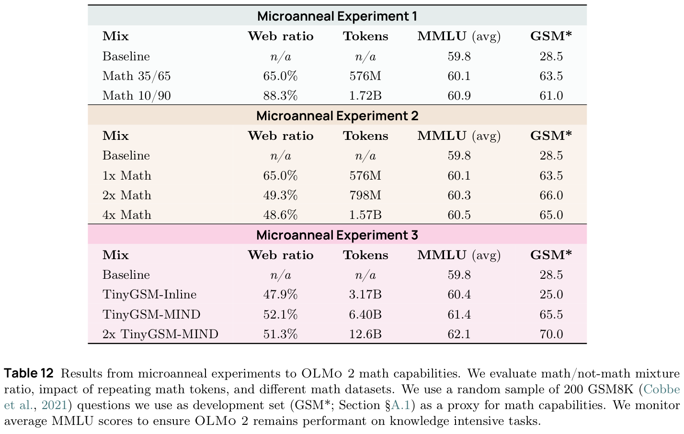
我们通过表 12 报告的三组实验，展示微退火如何形成最终数学混合。用于评估这里的数据质量的主要指标是 MMLU，以及 \(\mathrm{GSM}^{*}\)，后者〔接下一页〕
〔接上一页〕是 GSM8K 评测集的 200 示例子集。请注意，中期训练的一个目标是改善 GSM8K 表现，但我们只允许自己查看 1319 个 GSM8K 示例中 200 个的性能，用于数据混合决策。
微退火实验 1：领域特定数据即使占比很小也有帮助。实验如下：从已完成预训练的 7B 模型开始，使用 TuluMath、DolminoSynthMath、Metamath、CodeSearchNet 与 GSM8K-Train 的混合，约 200M tokens，分别训练数学/DCLM 比例为 35/65 和 10/90 的混合，评测 MMLU 与 \(\mathrm{GSM}^{*}\)。退火前 \(\mathrm{GSM}^{*}\) 为 28.5，35/65 混合得到 63.5，10/90 混合得到 61。这表明，退火混合中不一定需要很大比例的领域特定数据，只要存在即可。
微退火实验 2：适量重复有益。从与上一实验相同的设置开始，将数学数据重复为两份和四份。我们看到，一份数学数据的 \(\mathrm{GSM}^{*}\) 分数为 61，两份为 66，四份为 65。这表明，即使高质量领域特定数据稀缺，少量重复仍能带来一些收益。
微退火实验 3：重写可以带来显著帮助。再次从已完成预训练的 7B 模型开始，评估将 Tiny-GSM 重写为自然语言格式对 \(\mathrm{GSM}^{*}\) 评测分数的影响。回顾一下，Tiny-GSM 的答案以代码形式编写，而预训练混合只有 2% 是代码。我们在采用行内标注版 TinyGSM 的混合上进行微退火，并与仅使用“Problem Solving”MIND 重写版 TinyGSM 的混合比较。相较基线，TinyGSM 代码版降低了 \(\mathrm{GSM}^{*}\) 性能，而重写版显著提高性能。这展示了重写作为低成本工具的力量：可以将数据转为更适合训练的形式。
4.5 最终中期训练混合与 checkpoint soups
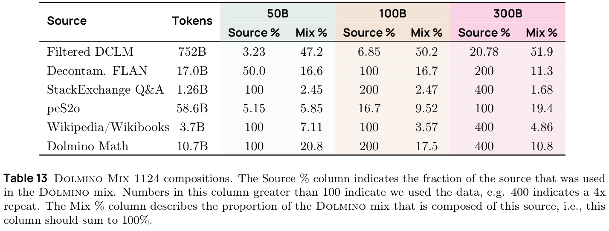
Dolmino Mix 1124 的最终组成见表 5。如前所述，我们抽样得到 50B、100B、300B tokens 三种混合，各自组成概述于表 13。由于 §4.3 与 §4.4.2 的实验表明，大致保持各来源混合比例不变有益，我们对 100B token 混合将 Stack Exchange 问答数据和中期训练数学数据重复两次，对 300B 混合重复四次；此外，300B 混合将 FLAN 重复两次，Wiki 数据重复四次。在全部混合中，来自 DCLM baseline 的过滤网络数据约占总 token 预算的 50%。
我们在 50B 混合上训练 OLMo 2 7B。为考虑更大 batch size（§2.3），OLMo 2 13B 使用 100B 混合，确保学习率退火期间的步数相同。此外，我们还实验〔接下一页〕
〔接上一页〕使用 300B 混合，让 OLMo 2 13B 进行更长退火阶段。32B 模型采用相同流程。
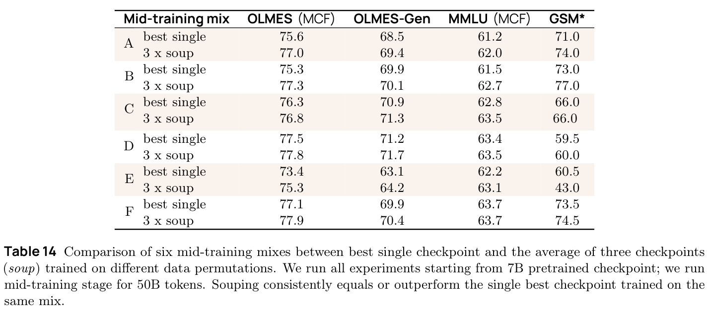
中期训练模型合并或“soups”。对使用不同数据顺序训练的多个模型 checkpoint 简单取平均，在计算机视觉（Wortsman et al., 2022）与语言建模（Li et al., 2024）中已证明有效。如表 14，我们在六种不同中期训练混合上确认了这种也称为模型合并或“souping”的方法的效果。所有实验中，将在相同数据混合的三种排列上退火得到的三个 checkpoint 合并，都得到与任意单独训练相同或更好的性能。
基于这一证据，我们广泛采用模型合并，获得最终 OLMo 2 7B 与 13B 模型。OLMo 2 7B 对三个在 Dolmino Mix 1124 的 50B 样本上训练的 checkpoint 取平均。OLMo 2 13B 与 32B 对四个 checkpoint 取平均：三个使用 100B 样本，一个使用 300B 样本；实验发现，这比只对三次 100B 训练取平均更好。
5 深入分析：后训练流程
为使 OLMo 2 适应下游生成任务，我们遵循 Tülu 3 方案（Lambert et al., 2024），更加注重宽松许可，并适当调整超参数。Tülu 3 方法包含三个训练阶段：SFT、结合 on-policy 偏好数据的直接偏好优化（DPO; Rafailov et al., 2024）偏好调优，以及最后的 RLVR。我们发现，Tülu 3 方案各阶段都可以顺利迁移到 OLMo 2 模型。本节重点介绍 7B 和 13B 模型的开发，1B 和 32B 采用非常相似的方案。
SFT。OLMo 2-Instruct 源自 Tülu 3 的 SFT 训练，依赖选取质量最高的现有指令数据集，并以基于 PersonaHub 方法（Chan et al., 2024）的规模化 SFT 合成数据补充。我们开发两种 SFT 混合：用于 7B 和 13B 的 tulu-3-sft-olmo-2-mixture，以及经过小幅修改、用于 1B 和 32B 的 tulu-3-sft-olmo-2-mixture-0225。
对于 tulu-3-sft-olmo-2-mixture，由于 OLMo 2 没有针对多语言任务训练，我们尝试从 SFT 阶段删除所有多语言数据。当移除 Tülu 3 中整个 Aya 子集与 Wildchat 多语言样本时，观察到平均约 0.5 分的下降，表明 Tülu 3 数据集是平衡的，不能简单地靠删除不相关子集来改善。该 SFT 混合共含 939,104 条提示。
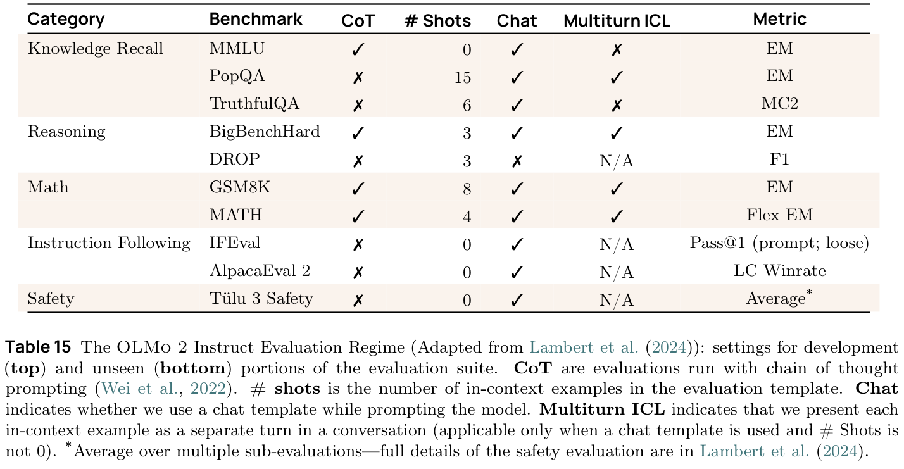
对 1B 和 32B 混合 tulu-3-sft-olmo-2-mixture-0225，我们进一步过滤掉包含合成数据生成过程中截止日期提及的指令，因为发现它与幻觉截止日期、以“作为一个 AI 语言模型……”开头等不良行为相关19。我们还通过多数投票提高合成数学题答案的质量，即避免对错误数学答案进行 SFT。对 Tülu 3 的 Persona MATH20 和 Grade School Math21 数据集，只保留模型在 5 个 completions 上达成多数票的提示和 completions。该 SFT 混合共含 866,138 条提示。
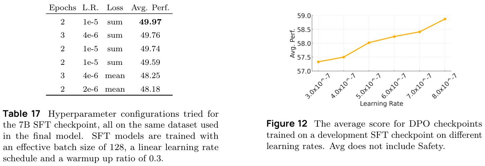
使用 DPO 进行偏好微调（PreFT）。Tülu 3 流程中 PreFT 的核心策略，是在 UltraFeedback 流程（Cui et al., 2023）基础上构建并扩展，在目标领域的数据上生成合成偏好。我们从一些开发中的 OLMo 2 SFT 模型采样回答，纳入 on-policy 数据，7B 与 13B 分别拥有独立数据集。
相较 Tülu 3，我们更新模型池，只纳入具有宽松许可的模型，见附录表 25。DPO 使用的具体提示也相较 Tülu 3 有小幅调整——我们从〔接下一页〕
19 这些过滤方法也用于 32B 偏好数据中的 chosen 样本。
20 过滤后的数据集：allenai/tulu-3-sft-personas-math-filtered。
21 过滤后的数据集：allenai/tulu-3-sft-personas-math-grade-filtered。
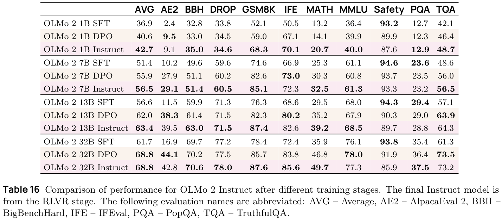
〔接上一页〕表 27 列出的多个来源获取提示，得到 7B 的 366.7k 条提示和 13B 的 377.7k 条提示数据集。基于这些提示，从包含不同系列与规模的 20 个模型的池中生成回答。
为创建合成偏好数据，我们以 GPT-4o-2024-08-06 作为语言模型评判者（Zheng et al., 2023），提示其依据有用性、真实性、诚实性和指令遵循等方面为 completions 评分。随后遵循 Argilla 的方法22，将各方面评分二值化：计算所有方面的平均评分，将评分最高的 completion 作为 chosen 回答，从其余 completions 中采样 rejected 回答。
1B 和 32B DPO 模型采用相同的 on-policy 方法训练。
RLVR。RLVR 是一种新的微调技术，面向可以构造带有可验证答案的提示的特定领域。例如，针对数学题，强化学习算法近端策略优化（PPO; Schulman et al., 2017）只有在答案正确时才获得奖励。更多细节见 Lambert et al.（2024）。
偏好调优后，我们使用 on-policy 7B 和 13B 偏好数据集训练对应 7B 和 13B 奖励模型。随后，在表现最佳的 7B 和 13B DPO checkpoint 上应用 RLVR，使用包含 GSM8K 与 MATH 训练集、以及 Lambert et al.（2024）带约束提示的组合数据集。RLVR 中，我们从对应 RM 初始化 PPO 价值函数，已有研究表明这有助于提高各项评测的平均分（Lambert et al., 2024）。13B 模型完成初轮 RLVR 后，其 GSM8K 和 MATH 表现低于一个此前开发的指令模型。因此，我们又进行两轮 RLVR：先在 GSM8K 训练集上，再在 MATH 训练集上。RLVR 阶段末选出的模型构成最终 OLMo 2 Instruct 模型。
对 1B 和 32B 模型，我们使用组相对策略优化（GRPO; Shao et al., 2024）进行 RLVR，无需奖励模型。32B 模型的评测指标见图 14。
超参数选择。对 7B 和 13B 模型进行以下超参数调优。每个阶段先用一个随机种子实验以确定配置，再以最终超参数用最多四个随机种子实验。最终超参数以 ♥ 标记：
- SFT：7B 模型搜索学习率 \(1\times10^{-5}\)、\(2\times10^{-5}\)（♥）、\(3\times10^{-5}\)；13B 模型搜索 \(1\times10^{-6}\)、\(4\times10^{-6}\)、\(5\times10^{-6}\)（♥）、\(7.5\times10^{-6}\)、\(8\times10^{-6}\)。
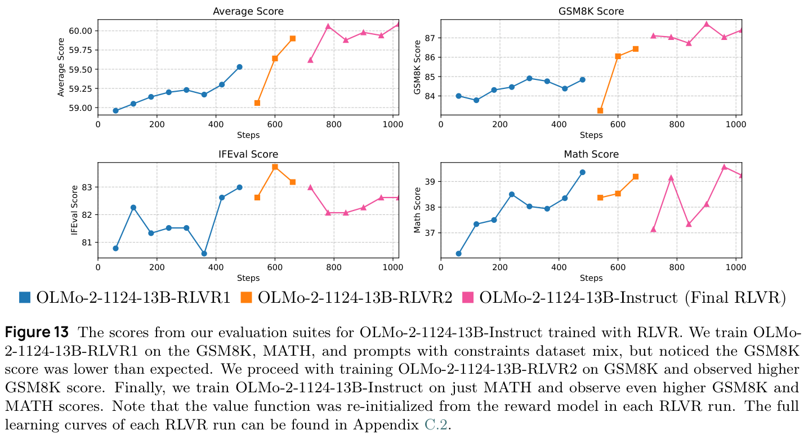
- DPO：7B 和 13B 均搜索学习率 \(5\times10^{-7}\)、\(6\times10^{-7}\)、\(7\times10^{-7}\)、\(8\times10^{-7}\)（♥，13B）和 \(1\times10^{-6}\)（♥，7B）。
- RM：7B 和 13B 分别采用 \(3\times10^{-6}\) 学习率及一个随机种子训练。
- RLVR：搜索 beta 值 0.03、0.05、0.07（♥，7B）和 0.1（♥，13B）。对 13B 模型，还搜索学习率 \(3\times10^{-7}\)（♥，13B）、\(4\times10^{-7}\)（♥，7B）。13B 在每个 RLVR 阶段最佳模型上进行该搜索。
我们使用较早的开发 checkpoint 对 SFT 与 DPO 进行超参数搜索，结果详见表 17 和图 12。一个关键发现是，相较 Lambert et al.（2024）描述的 Llama 3.1 训练方案，OLMo 2 需要明显更高的学习率。最终模型优化后的超参数见表 17、18。
32B 模型后训练发生在 7B 和 13B 发布之后，因此独立选择超参数。SFT 搜索学习率 \(1\times10^{-6}\)、\(2\times10^{-6}\)、\(3\times10^{-6}\)、\(4\times10^{-6}\)、\(5\times10^{-6}\)，最佳为 \(4\times10^{-6}\)，并额外运行一个种子比较性能。DPO 再次搜索学习率 \(8\times10^{-7}\)、\(1\times10^{-6}\)、\(1.5\times10^{-6}\)、\(2\times10^{-6}\)、\(2.5\times10^{-6}\)，最佳为 \(2\times10^{-6}\)。RLVR 中，32B 因改用 GRPO 无需奖励模型。此外，最终模型采用学习率 \(5\times10^{-7}\)、KL beta 0.1，每条提示 16 个样本。
OLMo 2-Instruct 评测。遵循 Tülu 3（Lambert et al., 2024），我们在表 15 列出的五个类别上评测 OLMo 2-Instruct。Tülu 3 使用包含代码任务的六类，但由于代码并非 OLMo 2 开发期间的目标技能，我们排除这一类。其余各类采用与开发 Tülu 3 方案相同的评测。表 15 也给出各评测的设置和指标，与 Lambert et al.（2024）对非代码类别的建议一致。
表 16 展示 OLMo 2 Instruct 各版本在不同训练阶段的表现。与规模相近开放模型的性能比较见表 7。此外，图 13 和 15 分别展示 13B 与 7B 模型的训练轨迹及关键性能指标。
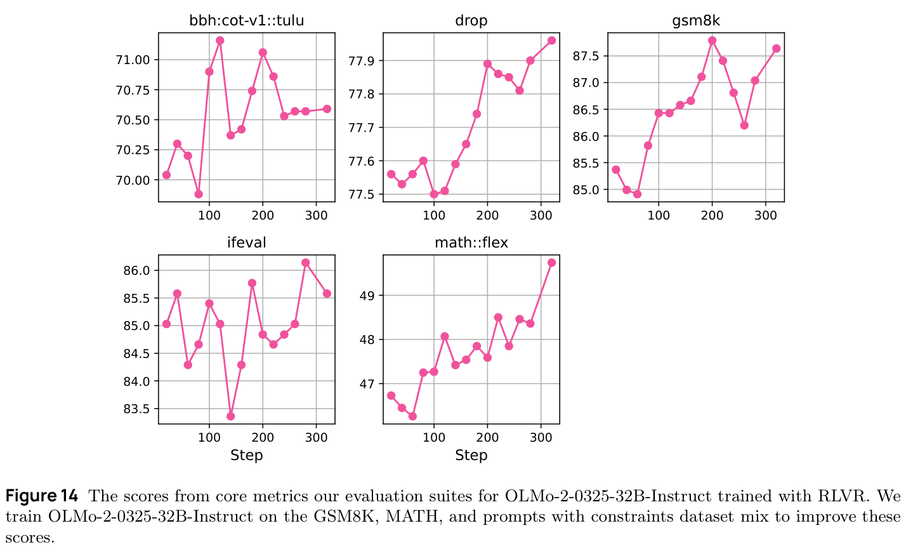
OLMo 2-Instruct 展示了与领先开放权重模型相当的性能。具体而言，OLMo 2 13B Instruct 的结果接近 Qwen 2.5 14B Instruct，同时在性能基准上超过 Tülu 3 8B 和 Llama 3.1 8B Instruct。RLVR 阶段在两种模型规模上都持续有效，随着训练奖励信号增加，评测指标也明显提高。
最后，我们在 Lambert et al.（2024）的未见评测套件上评测 OLMo 2-Instruct，排除代码评测任务。未见套件上的 Instruct 分数见表 24。
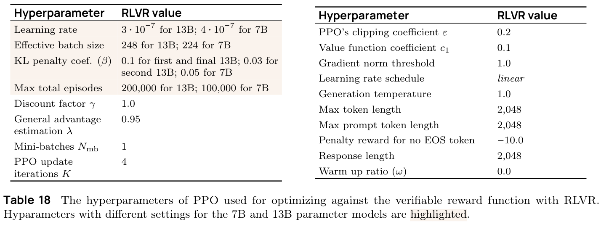
6 深入分析：基础设施作为研究催化剂
语言模型训练以计算密集著称。训练大模型需要先进硬件，也需要投入大量工作才能高效运行。效率提升可转化为更多 tokens 或参数，直接影响最终模型质量。GPU 是这套基础设施的核心，〔接下一页〕
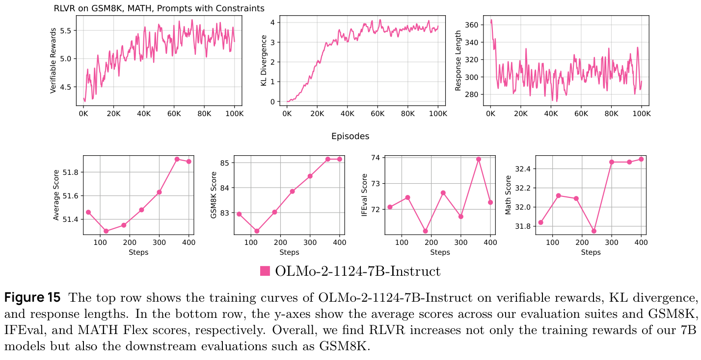
〔接上一页〕要让它们以最高效率运行，还需要投资其他流程与系统。数据中心需要计算节点之间的高速互连，确保昂贵的 GPU 无需等待数据到达。训练任务需要大量快速、可靠的存储以访问训练数据。GPU 故障率高于大多数其他硬件，而单次训练可能同时需要数千张 GPU，因此有效的监控与替换策略必不可少。本节详细介绍为支持 OLMo 2 工作负载所做的硬件与软件投入。
6.1 集群
OLMo 2 在 Ai2 的 Jupiter 和 Augusta 两个集群上训练。尽管硬件与架构不同，两者都提供足够训练吞吐量。Ai2 工作负载管理系统 Beaker 允许研究者在集群间迁移工作负载，7B 和 13B 都有部分训练在两个集群上完成，其中 7B 的大部分在 Jupiter，13B 的大部分在 Augusta。
6.1.1 Jupiter
Jupiter 是位于得克萨斯州奥斯汀的 128 节点 GPU 集群，由 Cirrascale Cloud Services 运营23。
计算。包含 1,024 张 NVIDIA H100 GPU，每张有 80GB HBM3，以 700W 运行。GPU 分布在 128 台服务器上，每台配备两颗 Intel Xeon Platinum 8468 CPU、2 TB DDR5 系统内存和 18 TB 本地 NVMe 存储。
存储。服务器经由 800 Gbps 本地网络连接到 WEKA 高性能存储集群24。存储集群在 11 台物理服务器上有 1 PB NVMe SSD 存储，在 12 台主机上有 5 PB HDD 存储。Jupiter GPU 服务器各有两张绑定的 25 Gbps Mellanox 以太网卡，每台主机总吞吐量为 50 Gbps。基准测试中，使用 64 台客户端达到 761 Gbps 读写吞吐量。
23 cirrascale.com。
24 weka.io。
互连。跨节点 GPU 通信由 InfiniBand 上的 RDMA，以及两层 Rail Optimized（Wang et al., 2023a）、均衡、具有完整二分带宽的网络提供。每台物理服务器有八张 400 Gbps InfiniBand 网卡，每台主机最大总吞吐量为 3200 Gbps。该配置允许 Ai2 在相同集群上同时运行数十个分布式训练工作负载，无需基于拓扑调度。
冷却。Jupiter 服务器安装在 Dynamic Density Cabinets 中25。每个机柜包含五台服务器，配有专用冷却与供电。机柜为封闭系统，空气经过上方隔间循环，在那里通过向水传热冷却。这使数据中心的电能使用效率（PUE）达到 1.2。高利用率下，H100 GPU 峰值温度为 75°C；平均温度在 60°C 到 65°C 之间。
6.1.2 Augusta 集群
Augusta 是由 Google Cloud 提供的 160 节点 GPU 集群。物理服务器位于艾奥瓦州 Council Bluffs。
计算。集群由 A3 Mega 虚拟机组成26，每台有八张 NVIDIA H100 GPU。
存储。Augusta 工作负载使用 Google Cloud Storage，每台虚拟机速度最高 1 GB/s。我们通过将存储交互抽象到同时支持文件与对象 API 的通用库中，保证可移植性。
互连。每张 GPU 有专用以太网 NIC。通过 GPUDirect-TCPXO、gVNIC 和紧凑节点放置，实现快速跨节点 GPU 通信。这种安排利用 Google 的 Jupiter 数据中心网络技术，以及具有分层卸载与全带宽可重配置光链路的 Titanium 系统，提供与无阻塞网络结构相似的带宽。
冷却。Augusta 服务器采用风冷，所在艾奥瓦园区报告过去十二个月的 PUE 为 1.12。
6.2 Beaker
OLMo 2 工作负载使用自定义工作负载管理系统 Beaker（Guerquin, 2022）调度。Beaker 通过两种关键方式帮助 OLMo 2：
可移植性。Beaker 架构可以用极少代码改动，使用三个不同数据中心的 GPU。只需运行一个打包为静态链接二进制的 Linux daemon，即可在任意位置运行。通常改一行代码就能将工作负载从一个位置移到另一个位置。
隔离。Beaker 工作负载容器化，提供一定隔离保证。这允许 OLMo 2 与其他任务在相同集群上同时运行，各自拥有独立环境与依赖，冲突极少。尤其是，Beaker executor 分配主机资源的方式，可以尽量减少但无法完全避免 noisy neighbors 引起的性能问题。容器还保存软件依赖和工作负载运行时细节，有助于运行可重复实验，即使数月后也能重现旧结果。相比之下，更常见的 Slurm 配置中，无论是否属于 OLMo 2，所有工作负载都共享底层操作系统、CUDA 库和环境，导致不稳定，使系统变化后实验无法复现。
Beaker 也使我们能够利用项目演进过程中新增的计算资源。它操作简单，让小型运维团队能快速接入新的计算来源。
25 cirrascale.com/products-and-services/cabinet-technologies。
26 a3-megagpu-8g，更多信息见 cloud.google.com/compute/docs/accelerator-optimized-machines。
本页原文链接
- https://cloud.google.com/blog/topics/systems/the-evolution-of-googles-jupiter-data-center-network
- https://cloud.google.com/blog/products/compute/titanium-underpins-googles-workload-optimized-infrastructure
- https://www.google.com/about/datacenters/efficiency/
- https://www.cirrascale.com/products-and-services/cabinet-technologies
6.3 稳定性与运维
两个集群都需要初期测试与 burn-in。在此期间，我们发现并解决了各种问题，从接插不到位的线缆，到 NCCL 库中计算节点顺序不正确。这些阶段需要与各自硬件供应商紧密合作，双方在过程中都不可或缺。之后，两个集群的可靠性大致相当。
GPU 健康检查。Beaker 在分配的 GPU 上运行工作负载前，先执行一个简单程序，尝试将两个张量相乘。若失败，Beaker 将相关主机隔离并重新调度工作负载，在错误节点引入不稳定前将其隔离。这减少了需要人工处理的中断，也让训练任务在出错时直接自行重启成为可行方案，因为可以放心它们会迁移到正常的计算节点集合。
节点隔离。Beaker 支持手动隔离节点，覆盖自动健康检查结果。被隔离节点退出调度，并标记为待修复。通过这种方式，Beaker 有效地让集群所有用户共同识别故障节点。
主动监控。除上述两种方法，Beaker 还基于集群遥测进行行业标准监控与自动告警。团队建立了响应系统问题的运维流程，能够及时解决问题。
6.4 最大化硬件利用率
Ai2 硬件基础设施（§6.1）需要良好的模型训练软件配合，充分利用可用资源。效率提高不仅让我们能用更多 tokens 训练更大模型，也改善模型训练的环境影响（§6.5），并加快实验。此外，OLMo 并非 Ai2 唯一项目，负责任地使用资源，可以尽量减少大模型训练对其他团队的影响。
以下介绍多项 PyTorch 优化27，它们显著缩短语言模型在我们基础设施上的训练时间，而收敛速度没有明显损失。
利用编译。torch.compile() 是 PyTorch 中的函数28，将原生 PyTorch 模块与函数编译为优化 kernel，通过避免顺序调用各个 PyTorch 操作的 Python 开销，并减少 GPU 上必须发生的读写次数，显著提高吞吐量、节省 GPU 显存。因此，正确使用 torch.compile() 时，许多情况下可有效达到手写 kernel 的性能，而无需额外复杂性和工程投入（Ansel et al., 2024）。
尽量减少主机与设备同步
默认情况下，GPU 操作是异步的。使用 GPU 的函数调用会被加入特定设备的队列，但不一定立即执行。这使系统能够并行执行更多计算，包括 CPU 或其他 GPU 上的操作……
——PyTorch：CUDA 语义
训练代码每次强制主机与设备同步，都会导致在当前队列中所有操作完成之前无法继续入队新操作。这些同步点妨碍性能，而且很容易无意引入。
会引起主机与设备同步的操作数量多得令人惊讶：
27 所有这些技术及更多技术都已在开源 OLMo-core 库中实现，它是第二代 OLMo 训练代码库。OLMo-core 可在 allenai/OLMo-core 获取。
28 pytorch.org/tutorials/intermediate/torch_compile_tutorial。
- 同步将张量从 CPU 复制到 GPU（例如
tensor.to(device="cuda")）会强制主机与设备同步。可通过异步复制避免（例如tensor.to(device="cuda", non_blocking=True)）。 - 从 GPU 复制张量到 CPU 无法安全地异步进行，因此应尽可能避免 GPU → CPU 数据传输。看似无害的代码也可能引起这种传输，进而引起同步，如
print一个 CUDA 张量，或if ...:块依赖 CUDA 张量转为布尔值的结果。 masked_select()等特定 PyTorch 操作可能意外引起主机与设备同步29。
开始训练循环前调用 torch.cuda.set_sync_debug_mode("warn")，可以检测主机与设备同步。每次同步发生时，PyTorch 会发出警告。这是尽力而为的检测，仍可能漏掉一些同步。
用独立 backend 异步记账。典型训练循环涉及记录指标、保存 checkpoint 等定期“记账”操作。虽然单次可能较快，但整个训练的累计成本可能很大。这些操作通常也涉及主机与设备同步。例如交叉熵损失这样的训练指标由 GPU 计算，最初以 CUDA 张量形式存在；因此，将指标记录到控制台会强制产生同步点。
许多操作必要且无法避免，但可以将多数记账工作放在独立线程中异步执行，尽量缩短阻塞训练循环的时间。然而，PyTorch NCCL backend 不是线程安全的。为绕过这一问题，我们设置一个不依赖 NCCL 的独立 backend（如 GLOO），专用于记账。之后流程可以如下：
- 指标收集与记录：决定记录间隔。由于涉及同步，不应每步记录。通常每 10 或 50 步记录一次。每步都计算指标，将其存储在原设备的 GPU 张量中。只有需要记录时，才复制到 CPU（引起同步），交给记账线程，由其使用自己的 PyTorch backend 聚合并记录。
- Checkpoint 保存：可采用相似流程。保存时，训练器在 CPU 内存中复制模型与优化器状态（引起同步），交给记账线程；该线程从各计算节点的模型分片组装模型并保存到磁盘，同时主线程可继续训练30。
两种情况下，对训练时间的影响都仅有一次主机与设备同步和 GPU 到 CPU 的复制时间。各事件频率可配置，对训练时间的总体影响可忽略。
显式 Python 垃圾回收。训练期间，默认 Python 垃圾回收器定期回收。在分布式环境中，数千训练进程应彼此同步步进，但没有机制强制垃圾回收在各进程同时发生。分布式训练的速度受最慢进程限制，因此导致每步平均训练时间明显下降，以及波动增加（图 16）。两者都随进程数增加而恶化。
为绕过此问题，OLMo 2 训练器禁用自动垃圾回收（例如调用 gc.disable()31），随后定期显式回收，在各进程中同时触发〔接下一页〕
29 github.com/pytorch/pytorch/issues/12461。
30 具体示例见 pytorch.org/blog/reducing-checkpointing-times。
31 docs.python.org/3/library/gc#gc.disable。
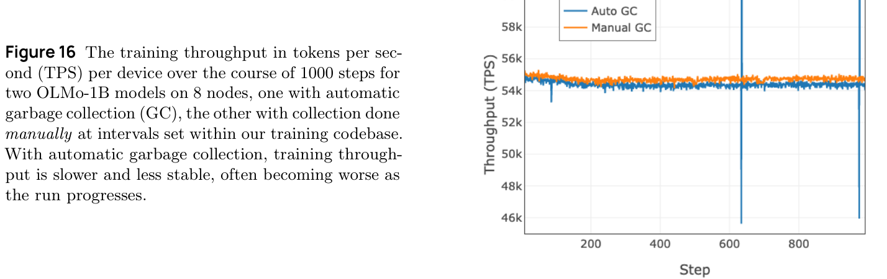
〔接上一页〕（例如调用 gc.collect(1)32）。
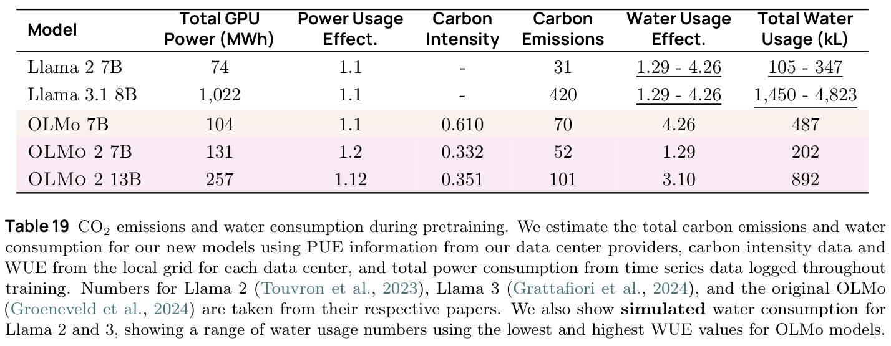
6.5 环境影响
遵循 Groeneveld et al.（2024）的分析及此前文献（Patterson et al., 2021; Dodge et al., 2022; Luccioni et al., 2022; Li et al., 2023a），我们先计算预训练期间的总能耗，再乘以当地电网碳强度，估算最终模型训练的环境影响及排碳量。我们还扩展此前分析，估算耗水量，将耗电量乘以发电和冷却硬件的用水效率。与 Groeneveld et al.（2024）一样，我们强调，虽然报告方法符合标准实践，却未考虑其他环境影响，如硬件制造、运输和最终处置期间的隐含排放与耗水，以及部署和推理等其他全生命周期运营影响，因此估算应视为下界。详细结果见表 19。
与 Groeneveld et al.（2024）一样，我们每 25ms 测量单个节点耗电量，计算训练期间的平均值，再乘以节点总数，得到各模型总耗电量。随后乘以训练模型所用数据中心的 PUE 系数，考虑数据中心整体能源效率。由于 OLMo 2 7B 大部分训练在 Jupiter 上完成，7B 分析采用 Jupiter 效率指标。OLMo 2 13B 在 Augusta 训练，因此采用其效率指标。我们估计预训练 OLMo 2 7B 与 13B 消耗约 391 MWh 能源。
为计算碳排放，将总耗电量乘以基于〔接下一页〕
〔接上一页〕各数据中心物理位置的碳强度系数，单位为 kg CO₂/kWh。Jupiter 由 Austin Energy 供电，其最近报告碳强度为 0.332 kg CO₂/kWh33。Augusta 位于艾奥瓦州，该州平均碳强度为 0.352 kg CO₂/kWh34，我们用它计算。估计训练最新模型排放约 154 tCO₂eq。
为计算耗水量，将总耗电量乘以场外发电与现场冷却硬件的用水效率（WUE）。两个集群都采用高效闭环冷却硬件，因此假设 \(\mathrm{WUE}_{\mathrm{onsite}}\) 为 0 L/kWh。遵循 Reig et al.（2020），假设 Jupiter 的 \(\mathrm{WUE}_{\mathrm{offsite}}\) 为 1.29 L/kWh，Augusta 为 3.10 L/kWh。估计训练最新模型消耗约 110 万升水。
虽然我们旨在全面分析模型训练的环境影响，但强调这只是开发大模型总成本的下界。在即将发表的论文（Morrison et al., 2025）中，将提供更全面分析，涵盖模型开发、预训练和部署全过程的能源、排放与耗水。
结论
我们介绍 OLMo 2 与 OLMo 2-Instruct，一个完全开放的 7B、13B、32B 参数语言模型系列，最多训练 6T tokens。基础与指令模型均能与同规模的 Qwen 2.5、Gemma 2、Llama 3.1 等开放权重模型竞争。我们详细介绍构建有竞争力语言模型所需的实质性贡献，其中许多不同于最初 OLMo，包括稳定基础设施、用于稳定性的架构改进、后期训练数据创新、最新后训练技术，以及许多其他细节。我们发布复现和扩展模型所需的全部训练与评测代码、数据集、checkpoint 和日志。OLMo 2 标志着开源语言模型持续进步，构建一个新的研究生态系统，在其中需要理解并分享新的训练方法与技术。
作者贡献
像 OLMo 这样的团队项目若没有许多成员跨越正式团队边界的灵活贡献，就不可能成功。由于无法涵盖所有贡献，我们列出各作者在 OLMo 2 中的主要贡献角色。作者按字母顺序列出：
- 基础模型开发，包括训练和数据整理：Shane Arora、Akshita Bhagia、Christopher Clark、Allyson Ettinger、Dirk Groeneveld、Yuling Gu、David Heineman、Matt Jordan、Jiacheng Liu、Kyle Lo、William Merrill、Tyler Murray、Jake Poznanski、Dustin Schwenck、Luca Soldaini、Oyvind Tafjord、David Wadden、Pete Walsh。
- 指令模型开发，包括训练和数据整理：Faeze Brahman、Pradeep Dasigi、Nouha Dziri、Yuling Gu、Shengyi Huang、Hamish Ivison、Nathan Lambert、Saumya Malik、Lester James V. Miranda、Jacob Morrison、Valentina Pyatkin、Oyvind Tafjord、Christopher Wilhelm。
- 运营支持，包括项目管理、法律指导、发布流程等：Taira Anderson、David Atkinson、Crystal Nam、Aman Rangapur。
- Ai2 集群设置与支持：Michal Guerquin、Michael Schmitz、Sam Skjonsberg、Michael Wilson。
- 指导与咨询：Ali Farhadi、Hannaneh Hajishirzi、Pang Wei Koh、Noah A. Smith、Luke Zettlemoyer。
33 Austin Energy 碳排放计算资料。
34 www.eia.gov/electricity/state/iowa。
本文作者身份依据对 OLMo 2 模型、相关产物及发布的直接贡献确定。核心贡献者因其对 OLMo 2 项目成功至关重要的持续重大贡献而得到认可。
致谢
没有 Ai2 同事的支持，本工作不可能完成：
- 感谢 Ben Bogin、Tim Dettmers、Ananya Harsh Jha、Ani Kembhavi、Matt Deitke、Ian Magnusson、Sewon Min、Niklas Muennighoff、Yizhong Wang、Alexander Wettig、Valentin Hofmann，进行有益研究讨论并分享相关项目发现。
- 感谢 Taylor Blanton、Byron Bischoff、Yen-Sung Chen、Arnavi Chheda、Jesse Dodge、Karen Farley、Huy Tran、Eric Marsh、Chris Newell、Aaron Sarnat，为模型演示构建 Ai2 Playground。
- 感谢 Yoganand Chandrasekhar、Johann Dahm、Fangzhou Hu、Caroline Wu 在 Ai2 集群上的工作。
- 也感谢 Ai2 其他同事对项目的诸多间接贡献：Robert Berry、Alex Buraczynski、Jennifer Dumas、Jason Dunkelberger、Rob Evans、David Graham、Regan Huff、Jenna James、Rodney Kinney、Bailey Kuehl、Sophie Lebrecht、Jaron Lochner、Carissa Schoenick、Will Smith、Sruthi Sreeram、Brooke Vlahos、Alice Wang、Caitlin Wittlif、Jiangjiang Yang。
也感谢与 Cody Blakeney、Mansheej Paul、Jonathan Frankle、Armen Aghajanyan、Akshat Shrivastava、Mike Lewis、John Schulman 的交流及其反馈。
没有许多其他机构的支持，OLMo 2 不可能完成。特别感谢 Google 帮助设置 OLMo 2 训练环境，以及 Cirrascale 对 Ai2 集群的持续支持。还感谢 National Artificial Intelligence Research Resource（NAIRR）Pilot 和 Microsoft Azure 提供推理额度支持本项目。
参考文献
M. Abdin, J. Aneja, H. Awadalla, A. Awadallah, A. A. Awan, N. Bach, A. Bahree, A. Bakhtiari, J. Bao, H. Behl, et al. Phi-3 技术报告：手机本地运行的高能力语言模型. arXiv 预印本 arXiv:2404.14219, 2024a.
M. Abdin, J. Aneja, H. S. Behl, S. Bubeck, R. Eldan, S. Gunasekar, M. Harrison, R. J. Hewett, M. Javaheripi, P. Kauffmann, J. R. Lee, Y. T. Lee, Y. Li, W. Liu, C. C. T. Mendes, A. Nguyen, E. Price, G. de Rosa, O. Saarikivi, A. Salim, S. Shah, X. Wang, R. Ward, Y. Wu, D. Yu, C. Zhang, and Y. Zhang. Phi-4 技术报告. arXiv 预印本 arXiv:2412.08905, 2024b.
Ai2. OLMo-1.7 7B：MMLU 提高 24 分, 4 2024. URL https://allenai.org/blog/olmo-1-7-7b-a-24-point-improvement-on-mmlu-92b43f7d269d.
J. Ainslie, J. Lee-Thorp, M. de Jong, Y. Zemlyanskiy, F. Lebron, and S. Sanghai. GQA：从多头 checkpoint 训练广义多查询 transformer 模型. In H. Bouamor, J. Pino, and K. Bali, editors, Proceedings of the 2023 Conference on Empirical Methods in Natural Language Processing, pages 4895–4901, Singapore, Dec. 2023. Association for Computational Linguistics. doi: 10.18653/v1/2023.emnlp-main.298. URL https://aclanthology.org/2023.emnlp-main.298/.
S. N. Akter, S. Prabhumoye, J. Kamalu, S. Satheesh, E. Nyberg, M. Patwary, M. Shoeybi, and B. Catanzaro. Mind：用于预训练 LLM 的数学引导合成对话, 2024. URL https://arxiv.org/abs/2410.12881.
L. B. Allal, A. Lozhkov, and E. Bakouch. Smollm：速度极快、能力出众, 07 2024a.
L. B. Allal, A. Lozhkov, E. Bakouch, G. M. Blázquez, L. Tunstall, A. Piqueres, A. Marafioti, C. Zakka, L. von Werra, and T. Wolf. Smollm2：优质数据带来优异性能, 11 2024b.
E. Almazrouei, H. Alobeidli, A. Alshamsi, A. Cappelli, R. Cojocaru, M. Debbah, E. Goffinet, D. Heslow, J. Launay, Q. Malartic, B. Noune, B. Pannier, and G. Penedo. Falcon-40B：具备先进性能的开放大语言模型. 2023.
J. Ansel, E. Yang, H. He, N. Gimelshein, A. Jain, M. Voznesensky, B. Bao, P. Bell, D. Berard, E. Burovski, G. Chauhan, A. Chourdia, W. Constable, A. Desmaison, Z. DeVito, E. Ellison, W. Feng, J. Gong, M. Gschwind, B. Hirsh, S. Huang, K. Kalambarkar, L. Kirsch, M. Lazos, M. Lezcano, Y. Liang, J. Liang, Y. Lu, C. K. Luk, B. Maher, Y. Pan, C. Puhrsch, M. Reso, M. Saroufim, M. Y. Siraichi, H. Suk, S. Zhang, M. Suo, P. Tillet, X. Zhao, E. Wang, K. Zhou, R. Zou, X. Wang, A. Mathews, W. Wen, G. Chanan, P. Wu, and S. Chintala. PyTorch 2：通过动态 Python 字节码变换与图编译加速机器学习. In Proceedings of the 29th ACM International Conference on Architectural Support for Programming Languages and Operating Systems, Volume 2, ASPLOS ’24, page 929–947, New York, NY, USA, 2024. Association for Computing Machinery. ISBN 9798400703850. doi: 10.1145/3620665.3640366. URL https://doi.org/10.1145/3620665.3640366.
A. Antoniades, X. Wang, Y. Elazar, A. Amayuelas, A. Albalak, K. Zhang, and W. Y. Wang. 泛化与记忆：将语言模型能力追溯至预训练数据. ArXiv, abs/2407.14985, 2024. URL https://api.semanticscholar.org/CorpusID:271328219.
Z. Azerbayev, H. Schoelkopf, K. Paster, M. D. Santos, S. McAleer, A. Q. Jiang, J. Deng, S. Biderman, and S. Welleck. Llemma：面向数学的开放语言模型, 2023.
J. Ba, J. R. Kiros, and G. E. Hinton. 层归一化. ArXiv, abs/1607.06450, 2016. URL https://api.semanticscholar.org/CorpusID:8236317.
A. Bhagia, J. Liu, A. Wettig, D. Heineman, O. Tafjord, A. H. Jha, L. Soldaini, N. A. Smith, D. Groeneveld, P. W. Koh, J. Dodge, and H. Hajishirzi. 通过计算高效的模型阶梯建立任务 scaling laws, 2024. URL https://arxiv.org/abs/2412.04403.
S. Biderman, H. Schoelkopf, Q. G. Anthony, H. Bradley, K. O’Brien, E. Hallahan, M. A. Khan, S. Purohit, U. S. Prashanth, E. Raff, et al. Pythia：跨训练与规模分析大语言模型的套件. In International Conference on Machine Learning, pages 2397–2430. PMLR, 2023.
S. Biderman, H. Schoelkopf, L. Sutawika, L. Gao, J. Tow, B. Abbasi, A. F. Aji, P. S. Ammanamanchi, S. Black, J. Clive, A. DiPofi, J. Etxaniz, B. Fattori, J. Z. Forde, C. Foster, M. Jaiswal, W. Y. Lee, H. Li, C. Lovering, N. Muennighoff, E. Pavlick, J. Phang, A. Skowron, S. Tan, X. Tang, K. A. Wang, G. I. Winata, F. Yvon, and A. Zou. 来自实践一线的经验：语言模型的可复现评测. arXiv:2405.14782, 2024.
S. Black, S. Biderman, E. Hallahan, Q. Anthony, L. Gao, L. Golding, H. He, C. Leahy, K. McDonell, J. Phang, M. Pieler, U. S. Prashanth, S. Purohit, L. Reynolds, J. Tow, B. Wang, and S. Weinbach. GPT-NeoX-20B：开源自回归语言模型. In Proceedings of the ACL Workshop on Challenges & Perspectives in Creating Large Language Models, 2022. URL https://arxiv.org/abs/2204.06745.
C. Blakeney, M. Paul, B. W. Larsen, S. Owen, and J. Frankle. 你的数据令人愉悦吗？训练末期提高领域采样比例带来的性能收益, 2024. URL https://arxiv.org/abs/2406.03476.
Chameleon Team. Chameleon：混合模态、早期融合的基础模型. ArXiv, abs/2405.09818, 2024. URL https://api.semanticscholar.org/CorpusID:269791516.
X. Chan, X. Wang, D. Yu, H. Mi, and D. Yu. 使用十亿个角色扩展合成数据创建. arXiv 预印本 arXiv:2406.20094, 2024.
H. Chang, J. Park, S. Ye, S. Yang, Y. Seo, D.-S. Chang, and M. Seo. 大语言模型如何在预训练中获取事实知识？ arXiv 预印本 arXiv:2406.11813, 2024.
M. Chen, J. Tworek, H. Jun, Q. Yuan, H. P. de Oliveira Pinto, J. Kaplan, H. Edwards, Y. Burda, N. Joseph, G. Brockman, A. Ray, R. Puri, G. Krueger, M. Petrov, H. Khlaaf, G. Sastry, P. Mishkin, B. Chan, S. Gray, N. Ryder, M. Pavlov, A. Power, L. Kaiser, M. Bavarian, C. Winter, P. Tillet, F. P. Such, D. Cummings, M. Plappert, F. Chantzis, E. Barnes, A. Herbert-Voss, W. H. Guss, A. Nichol, A. Paino, N. Tezak, J. Tang, I. Babuschkin, S. Balaji, S. Jain, W. Saunders, C. Hesse, A. N. Carr, J. Leike, J. Achiam, V. Misra, E. Morikawa, A. Radford, M. Knight, M. Brundage, M. Murati, K. Mayer, P. Welinder, B. McGrew, D. Amodei, S. McCandlish, I. Sutskever, and W. Zaremba. 评估基于代码训练的大语言模型. 2021.
A. Chowdhery, S. Narang, J. Devlin, M. Bosma, G. Mishra, A. Roberts, P. Barham, H. W. Chung, C. Sutton, S. Gehrmann, P. Schuh, K. Shi, S. Tsvyashchenko, J. Maynez, A. Rao, P. Barnes, Y. Tay, N. M. Shazeer, V. Prabhakaran, E. Reif, N. Du, B. Hutchinson, R. Pope, J. Bradbury, J. Austin, M. Isard, G. Gur-Ari, P. Yin, T. Duke, A. Levskaya, S. Ghemawat, S. Dev, H. Michalewski, X. García, V. Misra, K. Robinson, L. Fedus, D. Zhou, D. Ippolito, D. Luan, H. Lim, B. Zoph, A. Spiridonov, R. Sepassi, D. Dohan, S. Agrawal, M. Omernick, A. M. Dai, T. S. Pillai, M. Pellat, A. Lewkowycz, E. Moreira, R. Child, O. Polozov, K. Lee, Z. Zhou, X. Wang, B. Saeta, M. Díaz, O. Firat, M. Catasta, J. Wei, K. S. Meier-Hellstern, D. Eck, J. Dean, S. Petrov, and N. Fiedel. PaLM：借助 Pathways 扩展语言建模. ArXiv, abs/2204.02311, 2022. URL https://api.semanticscholar.org/CorpusID:247951931.
C. Clark, K. Lee, M.-W. Chang, T. Kwiatkowski, M. Collins, and K. Toutanova. BoolQ：探索自然是非问题出人意料的难度. In J. Burstein, C. Doran, and T. Solorio, editors, Proceedings of the 2019 Conference of the North American Chapter of the Association for Computational Linguistics: Human Language Technologies, Volume 1 (Long and Short Papers), pages 2924–2936, Minneapolis, Minnesota, June 2019. Association for Computational Linguistics. doi: 10.18653/v1/N19-1300. URL https://aclanthology.org/N19-1300.
P. Clark, I. Cowhey, O. Etzioni, T. Khot, A. Sabharwal, C. Schoenick, and O. Tafjord. 认为你已解决问答？试试 ARC，即 AI2 推理挑战. CoRR, arXiv:1803.05457, 2018.
K. Cobbe, V. Kosaraju, M. Bavarian, M. Chen, H. Jun, L. Kaiser, M. Plappert, J. Tworek, J. Hilton, R. Nakano, C. Hesse, and J. Schulman. 训练验证器以解决数学文字题, 2021. URL https://arxiv.org/abs/2110.14168.
Cohere. Command R：生产规模的检索增强生成. https://cohere.com/blog/command-r, 2024a. 访问日期： 2024-12-17.
Cohere. 介绍 Command R7B：快速高效的生成式 AI. https://cohere.com/blog/command-r7b, 2024b. 访问日期： 2024-12-17.
Cohere. 介绍 Command R+：为商业构建的可扩展 LLM. https://cohere.com/blog/command-r-plus-microsoft-azure, 2024c. 访问日期： 2024-12-17.
B. Cottier, J. You, N. Martemianova, and D. Owen. 开放模型落后多少？, Nov. 2024. URL https://epoch.ai/blog/open-models-report. 访问日期： 2024-12-18.
A. Cowsik, T. Nebabu, X.-L. Qi, and S. Ganguli. 信号传播的几何动态预测 transformer 的可训练性, 2024. URL https://arxiv.org/abs/2403.02579.
G. Cui, L. Yuan, N. Ding, G. Yao, W. Zhu, Y. Ni, G. Xie, Z. Liu, and M. Sun. UltraFeedback：借助高质量反馈提升语言模型. arXiv 预印本 arXiv:2310.01377, 2023.
T. Dao. FlashAttention-2：借助更好的并行与工作划分实现更快的 attention. In International Conference on Learning Representations (ICLR), 2024.
Databricks. 介绍 DBRX：新的先进开放 LLM, 3 2024. URL https://www.databricks.com/blog/introducing-dbrx-new-state-art-open-llm.
M. Dehghani, J. Djolonga, B. Mustafa, P. Padlewski, J. Heek, J. Gilmer, A. Steiner, M. Caron, R. Geirhos, I. Alab- dulmohsin, R. Jenatton, L. Beyer, M. Tschannen, A. Arnab, X. Wang, C. Riquelme, M. Minderer, J. Puigcerver, U. Evci, M. Kumar, S. van Steenkiste, G. F. Elsayed, A. Mahendran, F. Yu, A. Oliver, F. Huot, J. Bastings, M. P. Collier, A. Gritsenko, V. Birodkar, C. Vasconcelos, Y. Tay, T. Mensink, A. Kolesnikov, F. Pavetić, D. Tran, T. Kipf, M. Lučić, X. Zhai, D. Keysers, J. Harmsen, and N. Houlsby. 将视觉 transformer 扩展至 220 亿参数, 2023a. URL https://arxiv.org/abs/2302.05442.
M. Dehghani, J. Djolonga, B. Mustafa, P. Padlewski, J. Heek, J. Gilmer, A. Steiner, M. Caron, R. Geirhos, I. M. Alabdulmohsin, R. Jenatton, L. Beyer, M. Tschannen, A. Arnab, X. Wang, C. Riquelme, M. Minderer, J. Puigcerver, U. Evci, M. Kumar, S. van Steenkiste, G. F. Elsayed, A. Mahendran, F. Yu, A. Oliver, F. Huot, J. Bastings, M. Collier, A. A. Gritsenko, V. Birodkar, C. N. Vasconcelos, Y. Tay, T. Mensink, A. Kolesnikov, F. Paveti’c, D. Tran, T. Kipf, M. Luvci’c, X. Zhai, D. Keysers, J. Harmsen, and N. Houlsby. 将视觉 transformer 扩展至 220 亿参数. ArXiv, abs/2302.05442, 2023b. URL https://api.semanticscholar.org/CorpusID:256808367.
J. Dodge, T. Prewitt, R. T. D. Combes, E. Odmark, R. Schwartz, E. Strubell, A. S. Luccioni, N. A. Smith, N. DeCario, and W. Buchanan. 衡量云实例中 AI 的碳强度, 2022. URL https://arxiv.org/abs/2206.05229.
D. Dua, Y. Wang, P. Dasigi, G. Stanovsky, S. Singh, and M. Gardner. DROP：要求对段落进行离散推理的阅读理解基准. In J. Burstein, C. Doran, and T. Solorio, editors, Proceedings of the 2019 Conference of the North American Chapter of the Association for Computational Linguistics: Human Language Technologies, Volume 1 (Long and Short Papers), pages 2368–2378, Minneapolis, Minnesota, June 2019. Association for Computational Linguistics. doi: 10.18653/v1/N19-1246. URL https://aclanthology.org/N19-1246.
Y. Dubois, B. Galambosi, P. Liang, and T. B. Hashimoto. 长度受控的 AlpacaEval：消除自动评估器偏差的简单方法. arXiv 预印本 arXiv:2404.04475, 2024.
A. Fan, Y. Jernite, E. Perez, D. Grangier, J. Weston, and M. Auli. ELI5：长篇问答. In Proceedings of the 57th Annual Meeting of the Association for Computational Linguistics, pages 3558–3567, 2019.
S. Feng, S. Prabhumoye, K. Kong, D. Su, M. Patwary, M. Shoeybi, and B. Catanzaro. 充分发挥数据潜力：通过两阶段预训练提高 LLM 准确率. arXiv 预印本 arXiv:2412.15285, 2024.
L. Gao, S. Biderman, S. Black, L. Golding, T. Hoppe, C. Foster, J. Phang, H. He, A. Thite, N. Nabeshima, S. Presser, and C. Leahy. The Pile：用于语言建模的 800GB 多样化文本数据集. CoRR, abs/2101.00027, 2021. URL https://arxiv.org/abs/2101.00027.
L. Gao, J. Tow, B. Abbasi, S. Biderman, S. Black, A. DiPofi, C. Foster, L. Golding, J. Hsu, A. Le Noac’h, H. Li, K. McDonell, N. Muennighoff, C. Ociepa, J. Phang, L. Reynolds, H. Schoelkopf, A. Skowron, L. Sutawika, E. Tang, A. Thite, B. Wang, K. Wang, and A. Zou. 用于 few-shot 语言模型评测的框架. https://zenodo.org/records/10256836, 12 2023. URL https://zenodo.org/records/10256836.
Gemma Team, T. Mesnard, C. Hardin, R. Dadashi, S. Bhupatiraju, S. Pathak, L. Sifre, M. Rivière, M. S. Kale, J. Love, et al. Gemma：基于 Gemini 研究与技术的开放模型. arXiv 预印本 arXiv:2403.08295, 2024a.
Gemma Team, M. Riviere, S. Pathak, P. G. Sessa, C. Hardin, S. Bhupatiraju, L. Hussenot, T. Mesnard, B. Shahriari, A. Ramé, et al. Gemma 2：在实用规模下改进开放语言模型. arXiv e-prints, pages arXiv–2408, 2024b.
P. Glorioso, Q. Anthony, Y. Tokpanov, A. Golubeva, V. Shyam, J. Whittington, J. Pilault, and B. Millidge. Zamba2 系列：技术报告. arXiv 预印本 arXiv:2411.15242, 2024.
A. Grattafiori, A. Dubey, A. Jauhri, A. Pandey, A. Kadian, A. Al-Dahle, A. Letman, A. Mathurx, A. Schelten, A. Vaughan, A. Yang, A. Fan, A. Goyal, A. Hartshorn, A. Yang, A. Mitra, A. Sravankumar, A. Korenev, A. Hinsvark, A. Rao, A. Zhang, A. Rodriguez, A. Gregerson, A. Spataru, B. Roziere, B. Biron, B. Tang, B. Chern, C. Caucheteux, C. Nayak, C. Bi, C. Marra, C. McConnell, C. Keller, C. Touret, C. Wu, C. Wong, C. C. Ferrer, C. Nikolaidis, D. Allonsius, D. Song, D. Pintz, D. Livshits, D. Wyatt, D. Esiobu, D. Choudhary, D. Mahajan, D. Garcia-Olano, D. Perino, D. Hupkes, E. Lakomkin, E. AlBadawy, E. Lobanova, E. Dinan, E. M. Smith, F. Radenovic, F. Guzmán, F. Zhang, G. Synnaeve, G. Lee, G. L. Anderson, G. Thattai, G. Nail, G. Mialon, G. Pang, G. Cucurell, H. Nguyen, H. Korevaar, H. Xu, H. Touvron, I. Zarov, I. A. Ibarra, I. Kloumann, I. Misra, I. Evtimov, J. Zhang, J. Copet, J. Lee, J. Geffert, J. Vranes, J. Park, J. Mahadeokar, J. Shah, J. van der Linde, J. Billock, J. Hong, J. Lee, J. Fu, J. Chi, J. Huang, J. Liu, J. Wang, J. Yu, J. Bitton, J. Spisak, J. Park, J. Rocca, J. Johnstun, J. Saxe, J. Jia, K. V.
〔接上一页的参考文献条目〕
Alwala, K. Prasad, K. Upasani, K. Plawiak, K. Li, K. Heafield, K. Stone, K. El-Arini, K. Iyer, K. Malik, K. Chiu, K. Bhalla, K. Lakhotia, L. Rantala-Yeary, L. van der Maaten, L. Chen, L. Tan, L. Jenkins, L. Martin, L. Madaan, L. Malo, L. Blecher, L. Landzaat, L. de Oliveira, M. Muzzi, M. Pasupuleti, M. Singh, M. Paluri, M. Kardas, M. Tsimpoukelli, M. Oldham, M. Rita, M. Pavlova, M. Kambadur, M. Lewis, M. Si, M. K. Singh, M. Hassan, N. Goyal, N. Torabi, N. Bashlykov, N. Bogoychev, N. Chatterji, N. Zhang, O. Duchenne, O. Çelebi, P. Alrassy, P. Zhang, P. Li, P. Vasic, P. Weng, P. Bhargava, P. Dubal, P. Krishnan, P. S. Koura, P. Xu, Q. He, Q. Dong, R. Srinivasan, R. Ganapathy, R. Calderer, R. S. Cabral, R. Stojnic, R. Raileanu, R. Maheswari, R. Girdhar, R. Patel, R. Sauvestre, R. Polidoro, R. Sumbaly, R. Taylor, R. Silva, R. Hou, R. Wang, S. Hosseini, S. Chennabasappa, S. Singh, S. Bell, S. S. Kim, S. Edunov, S. Nie, S. Narang, S. Raparthy, S. Shen, S. Wan, S. Bhosale, S. Zhang, S. Vandenhende, S. Batra, S. Whitman, S. Sootla, S. Collot, S. Gururangan, S. Borodinsky, T. Herman, T. Fowler, T. Sheasha, T. Georgiou, T. Scialom, T. Speckbacher, T. Mihaylov, T. Xiao, U. Karn, V. Goswami, V. Gupta, V. Ramanathan, V. Kerkez, V. Gonguet, V. Do, V. Vogeti, V. Albiero, V. Petrovic, W. Chu, W. Xiong, W. Fu, W. Meers, X. Martinet, X. Wang, X. Wang, X. E. Tan, X. Xia, X. Xie, X. Jia, X. Wang, Y. Goldschlag, Y. Gaur, Y. Babaei, Y. Wen, Y. Song, Y. Zhang, Y. Li, Y. Mao, Z. D. Coudert, Z. Yan, Z. Chen, Z. Papakipos, A. Singh, A. Srivastava, A. Jain, A. Kelsey, A. Shajnfeld, A. Gangidi, A. Victoria, A. Goldstand, A. Menon, A. Sharma, A. Boesenberg, A. Baevski, A. Feinstein, A. Kallet, A. Sangani, A. Teo, A. Yunus, A. Lupu, A. Alvarado, A. Caples, A. Gu, A. Ho, A. Poulton, A. Ryan, A. Ramchandani, A. Dong, A. Franco, A. Goyal, A. Saraf, A. Chowdhury, A. Gabriel, A. Bharambe, A. Eisenman, A. Yazdan, B. James, B. Maurer, B. Leonhardi, B. Huang, B. Loyd, B. D. Paola, B. Paranjape, B. Liu, B. Wu, B. Ni, B. Hancock, B. Wasti, B. Spence, B. Stojkovic, B. Gamido, B. Montalvo, C. Parker, C. Burton, C. Mejia, C. Liu, C. Wang, C. Kim, C. Zhou, C. Hu, C.-H. Chu, C. Cai, C. Tindal, C. Feichtenhofer, C. Gao, D. Civin, D. Beaty, D. Kreymer, D. Li, D. Adkins, D. Xu, D. Testuggine, D. David, D. Parikh, D. Liskovich, D. Foss, D. Wang, D. Le, D. Holland, E. Dowling, E. Jamil, E. Montgomery, E. Presani, E. Hahn, E. Wood, E.-T. Le, E. Brinkman, E. Arcaute, E. Dunbar, E. Smothers, F. Sun, F. Kreuk, F. Tian, F. Kokkinos, F. Ozgenel, F. Caggioni, F. Kanayet, F. Seide, G. M. Florez, G. Schwarz, G. Badeer, G. Swee, G. Halpern, G. Herman, G. Sizov, Guangyi, Zhang, G. Lakshminarayanan, H. Inan, H. Shojanazeri, H. Zou, H. Wang, H. Zha, H. Habeeb, H. Rudolph, H. Suk, H. Aspegren, H. Goldman, H. Zhan, I. Damlaj, I. Molybog, I. Tufanov, I. Leontiadis, I.-E. Veliche, I. Gat, J. Weissman, J. Geboski, J. Kohli, J. Lam, J. Asher, J.-B. Gaya, J. Marcus, J. Tang, J. Chan, J. Zhen, J. Reizenstein, J. Teboul, J. Zhong, J. Jin, J. Yang, J. Cummings, J. Carvill, J. Shepard, J. McPhie, J. Torres, J. Ginsburg, J. Wang, K. Wu, K. H. U, K. Saxena, K. Khandelwal, K. Zand, K. Matosich, K. Veeraraghavan, K. Michelena, K. Li, K. Jagadeesh, K. Huang, K. Chawla, K. Huang, L. Chen, L. Garg, L. A, L. Silva, L. Bell, L. Zhang, L. Guo, L. Yu, L. Moshkovich, L. Wehrstedt, M. Khabsa, M. Avalani, M. Bhatt, M. Mankus, M. Hasson, M. Lennie, M. Reso, M. Groshev, M. Naumov, M. Lathi, M. Keneally, M. Liu, M. L. Seltzer, M. Valko, M. Restrepo, M. Patel, M. Vyatskov, M. Samvelyan, M. Clark, M. Macey, M. Wang, M. J. Hermoso, M. Metanat, M. Rastegari, M. Bansal, N. Santhanam, N. Parks, N. White, N. Bawa, N. Singhal, N. Egebo, N. Usunier, N. Mehta, N. P. Laptev, N. Dong, N. Cheng, O. Chernoguz, O. Hart, O. Salpekar, O. Kalinli, P. Kent, P. Parekh, P. Saab, P. Balaji, P. Rittner, P. Bontrager, P. Roux, P. Dollar, P. Zvyagina, P. Ratanchandani, P. Yuvraj, Q. Liang, R. Alao, R. Rodriguez, R. Ayub, R. Murthy, R. Nayani, R. Mitra, R. Parthasarathy, R. Li, R. Hogan, R. Battey, R. Wang, R. Howes, R. Rinott, S. Mehta, S. Siby, S. J. Bondu, S. Datta, S. Chugh, S. Hunt, S. Dhillon, S. Sidorov, S. Pan, S. Mahajan, S. Verma, S. Yamamoto, S. Ramaswamy, S. Lindsay, S. Lindsay, S. Feng, S. Lin, S. C. Zha, S. Patil, S. Shankar, S. Zhang, S. Zhang, S. Wang, S. Agarwal, S. Sajuyigbe, S. Chintala, S. Max, S. Chen, S. Kehoe, S. Satterfield, S. Govindaprasad, S. Gupta, S. Deng, S. Cho, S. Virk, S. Subramanian, S. Choudhury, S. Goldman, T. Remez, T. Glaser, T. Best, T. Koehler, T. Robinson, T. Li, T. Zhang, T. Matthews, T. Chou, T. Shaked, V. Vontimitta, V. Ajayi, V. Montanez, V. Mohan, V. S. Kumar, V. Mangla, V. Ionescu, V. Poenaru, V. T. Mihailescu, V. Ivanov, W. Li, W. Wang, W. Jiang, W. Bouaziz, W. Constable, X. Tang, X. Wu, X. Wang, X. Wu, X. Gao, Y. Kleinman, Y. Chen, Y. Hu, Y. Jia, Y. Qi, Y. Li, Y. Zhang, Y. Zhang, Y. Adi, Y. Nam, Yu, Wang, Y. Zhao, Y. Hao, Y. Qian, Y. Li, Y. He, Z. Rait, Z. DeVito, Z. Rosnbrick, Z. Wen, Z. Yang, Z. Zhao, and Z. Ma. Llama 3 模型群, 2024. URL https://arxiv.org/abs/2407.21783.
D. Groeneveld, I. Beltagy, P. Walsh, A. Bhagia, R. Kinney, O. Tafjord, A. Jha, H. Ivison, I. Magnusson, Y. Wang, S. Arora, D. Atkinson, R. Authur, K. R. Chandu, A. Cohan, J. Dumas, Y. Elazar, Y. Gu, J. Hessel, T. Khot, W. Merrill, J. D. Morrison, N. Muennighoff, A. Naik, C. Nam, M. E. Peters, V. Pyatkin, A. Ravichander, D. Schwenk, S. Shah, W. Smith, E. Strubell, N. Subramani, M. Wortsman, P. Dasigi, N. Lambert, K. Richardson, L. S. Zettlemoyer, J. Dodge, K. Lo, L. Soldaini, N. A. Smith, and H. Hajishirzi. OLMo：加速语言模型科学研究. ArXiv, abs/2402.00838, 2024. URL https://api.semanticscholar.org/CorpusID:267365485.
Y. Gu, O. Tafjord, B. Kuehl, D. Haddad, J. Dodge, and H. Hajishirzi. OLMES：语言模型评测标准. ArXiv, abs/2406.08446, 2024. URL https://api.semanticscholar.org/CorpusID:270391754.
M. Guerquin. 介绍 Ai2 的 Beaker. Ai2 Blog, https://web.archive.org/web/20241231204439/https://medium.com/ai2-blog/beaker-ed617d5f4593, 2022. 访问日期： 2024-12-31.
S. Gururangan, A. Marasović, S. Swayamdipta, K. Lo, I. Beltagy, D. Downey, and N. A. Smith. 不要停止预训练：让语言模型适应领域与任务. In Proceedings of the 58th Annual Meeting of the Association for Computational Linguistics, pages 8342–8360, 2020.
S. Gururangan, M. Wortsman, S. Y. Gadre, A. Dave, M. Kilian, W. Shi, J. Mercat, G. Smyrnis, G. Ilharco, M. Jordan, R. Heckel, A. Dimakis, A. Farhadi, V. Shankar, and L. Schmidt. open_lm：极简而高性能的语言建模（LM）仓库, 2023. URL https://github.com/mlfoundations/open_lm/. GitHub 仓库。
D. Hendrycks, C. Burns, S. Basart, A. Zou, M. Mazeika, D. Song, and J. Steinhardt. 衡量大规模多任务语言理解. Proceedings of the International Conference on Learning Representations (ICLR), 2021a.
D. Hendrycks, C. Burns, S. Kadavath, A. Arora, S. Basart, E. Tang, D. Song, and J. Steinhardt. 使用 MATH 数据集衡量数学解题能力. NeurIPS, 2021b.
A. Hurst, A. Lerer, A. P. Goucher, A. Perelman, A. Ramesh, A. Clark, A. Ostrow, A. Welihinda, A. Hayes, A. Radford, et al. GPT-4o 系统卡. arXiv 预印本 arXiv:2410.21276, 2024.
H. Husain, H.-H. Wu, T. Gazit, M. Allamanis, and M. Brockschmidt. CodeSearchNet 挑战：评估语义代码搜索的现状. arXiv 预印本 arXiv:1909.09436, 2019.
A. Ibrahim, B. Thérien, K. Gupta, M. L. Richter, Q. Anthony, T. Lesort, E. Belilovsky, and I. Rish. 持续预训练大语言模型的简单、可扩展策略, 2024. URL https://arxiv.org/abs/2403.08763.
H. Ivison, Y. Wang, V. Pyatkin, N. Lambert, M. Peters, P. Dasigi, J. Jang, D. Wadden, N. A. Smith, I. Beltagy, et al. 变化气候中的骆驼：用 Tülu 2 增强语言模型适配. arXiv 预印本 arXiv:2311.10702, 2023.
A. Q. Jiang, A. Sablayrolles, A. Mensch, C. Bamford, D. S. Chaplot, D. d. l. Casas, F. Bressand, G. Lengyel, G. Lample, L. Saulnier, et al. Mistral 7B. arXiv 预印本 arXiv:2310.06825, 2023.
X. Jin and X. Ren. 通过低秩示例关联揭示语言模型遗忘的机制. 2024. URL https://api.semanticscholar.org/CorpusID:270620654.
M. Joshi, E. Choi, D. Weld, and L. Zettlemoyer. TriviaQA：大规模远程监督的阅读理解挑战数据集. In R. Barzilay and M.-Y. Kan, editors, Proceedings of the 55th Annual Meeting of the Association for Computational Linguistics (Volume 1: Long Papers), pages 1601–1611, Vancouver, Canada, July 2017. Association for Computational Linguistics. doi: 10.18653/v1/P17-1147. URL https://aclanthology.org/P17-1147.
J. Kaplan, S. McCandlish, T. Henighan, T. B. Brown, B. Chess, R. Child, S. Gray, A. Radford, J. Wu, and D. Amodei. 神经语言模型的 scaling laws. arXiv 预印本 arXiv:2001.08361, 2020.
A. Karpathy. 不错！对尖峰，我会尝试如“-sl 7 -sg 7”，在训练更早期控制不稳定性。（若检测到损失或 gradient 范数超过 7 sigma 的 outlier，则跳过更新。）. X (formerly Twitter) https://x.com/karpathy/status/1812917107379872145, July 2024. 访问日期：2024-12-31.
D. Kocetkov, R. Li, L. B. Allal, J. Li, C. Mou, C. M. Ferrandis, Y. Jernite, M. Mitchell, S. Hughes, T. Wolf, D. Bahdanau, L. von Werra, and H. de Vries. The Stack：3 TB 采用宽松许可的源代码, 2022. URL https://arxiv.org/abs/2211.15533.
T. Kwiatkowski, J. Palomaki, O. Redfield, M. Collins, A. Parikh, C. Alberti, D. Epstein, I. Polosukhin, J. Devlin, K. Lee, K. Toutanova, L. Jones, M. Kelcey, M.-W. Chang, A. M. Dai, J. Uszkoreit, Q. Le, and S. Petrov. Natural Questions：问答研究基准. Transactions of the Association for Computational Linguistics, 7:452–466, 2019. doi: 10.1162/tacl_a_00276. URL https://aclanthology.org/Q19-1026.
N. Lambert, J. D. Morrison, V. Pyatkin, S. Huang, H. Ivison, F. Brahman, L. J. V. Miranda, A. Liu, N. Dziri, S. Lyu, Y. Gu, S. Malik, V. Graf, J. D. Hwang, J. Yang, R. L. Bras, O. Tafjord, C. Wilhelm, L. Soldaini, N. A. Smith, Y. Wang, P. Dasigi, and H. Hajishirzi. Tülu 3：推进开放语言模型后训练前沿. 2024. URL https://api.semanticscholar.org/CorpusID:274192505.
S. Land and M. Bartolo. 寻找 Magikarp：自动检测大语言模型中训练不足的 tokens. arXiv 预印本 arXiv:2405.05417, 2024.
J. Li, A. Fang, G. Smyrnis, M. Ivgi, M. Jordan, S. Gadre, H. Bansal, E. Guha, S. Keh, K. Arora, S. Garg, R. Xin, N. Muennighoff, R. Heckel, J. Mercat, M. Chen, S. Gururangan, M. Wortsman, A. Albalak, Y. Bitton, M. Nezhurina, A. Abbas, C.-Y. Hsieh, D. Ghosh, J. Gardner, M. Kilian, H. Zhang, R. Shao, S. Pratt, S. Sanyal, G. Ilharco, G. Daras, K. Marathe, A. Gokaslan, J. Zhang, K. Chandu, T. Nguyen, I. Vasiljevic, S. Kakade, S. Song, S. Sanghavi, F. Faghri, S. Oh, L. Zettlemoyer, K. Lo, A. El-Nouby, H. Pouransari, A. Toshev, S. Wang, D. Groeneveld, L. Soldaini, P. W.
〔接上一页的参考文献条目〕
Koh, J. Jitsev, T. Kollar, A. G. Dimakis, Y. Carmon, A. Dave, L. Schmidt, and V. Shankar. DataComp-LM：寻找下一代语言模型训练集, 2024. URL https://arxiv.org/abs/2406.11794.
P. Li, J. Yang, M. A. Islam, and S. Ren. 让 AI 不那么“渴”：揭示并解决 AI 模型隐秘的水足迹, 2023a. URL https://arxiv.org/abs/2304.03271.
R. Li, L. B. Allal, Y. Zi, N. Muennighoff, D. Kocetkov, C. Mou, M. Marone, C. Akiki, J. Li, J. Chim, et al. StarCoder：愿源代码与你同在！, 2023b.
S. Lin, J. Hilton, and O. Evans. TruthfulQA：衡量模型如何模仿人类谬误. arXiv 预印本 arXiv:2109.07958, 2021.
B. Liu, S. Bubeck, R. Eldan, J. Kulkarni, Y. Li, A. Nguyen, R. Ward, and Y. Zhang. TinyGSM：达到 >80URL https://arxiv.org/abs/2312.09241.
J. Liu, C. S. Xia, Y. Wang, and L. Zhang. ChatGPT 生成的代码真的正确吗？对大语言模型代码生成进行严格评估. In Thirty-seventh Conference on Neural Information Processing Systems, 2023b. URL https://openreview.net/forum?id=1qvx610Cu7.
Z. Liu, H. Hu, Y. Lin, Z. Yao, Z. Xie, Y. Wei, J. Ning, Y. Cao, Z. Zhang, L. Dong, F. Wei, and B. Guo. Swin transformer v2：扩展容量与分辨率. 2022 IEEE/CVF Conference on Computer Vision and Pattern Recognition (CVPR), pages 11999–12009, 2021. URL https://api.semanticscholar.org/CorpusID:244346076.
Z. Liu, A. Qiao, W. Neiswanger, H. Wang, B. Tan, T. Tao, J. Li, Y. Wang, S. Sun, O. Pangarkar, et al. LLM360：迈向完全透明的开源 LLM. arXiv 预印本 arXiv:2312.06550, 2023c.
S. Longpre, L. Hou, T. Vu, A. Webson, H. W. Chung, Y. Tay, D. Zhou, Q. V. Le, B. Zoph, J. Wei, et al. FLAN 集合：设计有效指令调优的数据与方法. arXiv 预印本 arXiv:2301.13688, 2023.
Z. Lu, A. Zhou, Z. Lu, S. Luo, W. Shi, R. Zhang, L. Song, M. Zhan, and H. Li. MathCoder：在 LLM 中无缝集成代码以增强数学推理. In The Twelfth International Conference on Learning Representations, 2024. URL https://openreview.net/forum?id=z8TW0ttBPp.
A. S. Luccioni, S. Viguier, and A.-L. Ligozat. 估算 176B 参数语言模型 BLOOM 的碳足迹, 2022. URL https://arxiv.org/abs/2211.02001.
A. Mallen, A. Asai, V. Zhong, R. Das, H. Hajishirzi, and D. Khashabi. 何时不应信任语言模型：调查参数化与非参数化记忆的效果与局限. arXiv 预印本, 2022.
M. Matena and C. Raffel. 通过 Fisher 加权平均合并模型. 2022. URL https://arxiv.org/abs/2111.09832.
S. McCandlish, J. Kaplan, D. Amodei, and O. D. Team. 大 batch 训练的实证模型. arXiv 预印本 arXiv:1812.06162, 2018.
L. Merrick, D. Xu, G. Nuti, and D. Campos. Arctic-embed：可扩展、高效且准确的文本 embedding 模型. arXiv 预印本 arXiv:2405.05374, 2024.
Mistral. Mistral Large 2：足够大. https://mistral.ai/news/mistral-large-2407/, 2024a. 访问日期： 2024- 12-17.
Mistral. Un Ministral, des Ministraux：介绍全球最佳边缘模型. https://mistral.ai/news/ministraux/, 2024b. 访问日期： 2024-12-17.
Mistral AI. Mistral 介绍 NeMO, 2024. URL https://mistral.ai/news/mistral-nemo/. 访问日期： 2024-11-21.
J. Morrison, C. Na, J. Fernandez, T. Dettmers, E. Strubell, and J. Dodge. 全面评估创建语言模型的环境影响. 即将发表， 2025.
MosaicML. LLM Foundry：Jeopardy 数据集. https://github.com/mosaicml/llm-foundry/blob/main/scripts/eval/local_data/world_knowledge/jeopardy_all.jsonl, 2024. 访问日期： 2024-11-10.
MosaicML NLP Team. 介绍 MPT-30B：提高开源基础模型标准, 2023. URL www.mosaicml.com/blog/mpt-30b. 访问日期： 2023-06-22.
N. Muennighoff, L. Soldaini, D. Groeneveld, K. Lo, J. Morrison, S. Min, W. Shi, P. Walsh, O. Tafjord, N. Lambert, Y. Gu, S. Arora, A. Bhagia, D. Schwenk, D. Wadden, A. Wettig, B. Hui, T. Dettmers, D. Kiela, A. Farhadi, N. A. Smith, P. W. Koh, A. Singh, and H. Hajishirzi. OLMoE：开放 MoE 语言模型, 2024. URL https://arxiv.org/abs/2409.02060.
Numind. NuExtract-1.5. https://huggingface.co/numind/NuExtract-1.5, 2024. 访问日期： 2024-11-24.
OpenAI. GPT-3.5 Turbo, 2023a. URL https://platform.openai.com/docs/models/gp#gpt-3-5-turbo.
OpenAI. GPT-4 技术报告. ArXiv, abs/2303.08774, 2023b. URL https://api.semanticscholar.org/CorpusID:257532815.
OpenAI. 介绍微调 API 改进并扩展自定义模型计划, 4 2024. URL https://openai.com/index/introducing-improvements-to-the-fine-tuning-api-and-expanding-our-custom-models-program/.
K. Paster, M. D. Santos, Z. Azerbayev, and J. Ba. OpenWebMath：高质量数学网络文本的开放数据集, 2023.
D. Patterson, J. Gonzalez, Q. Le, C. Liang, L.-M. Munguia, D. Rothchild, D. So, M. Texier, and J. Dean. 碳排放与大型神经网络训练, 2021. URL https://arxiv.org/abs/2104.10350.
G. Penedo, H. Kydlíček, A. Lozhkov, M. Mitchell, C. Raffel, L. Von Werra, T. Wolf, et al. FineWeb 数据集：从网络中大规模提炼最优质文本数据. In The Thirty-eight Conference on Neural Information Processing Systems; Datasets and Benchmarks Track, 2024.
Qwen, :, A. Yang, B. Yang, B. Zhang, B. Hui, B. Zheng, B. Yu, C. Li, D. Liu, F. Huang, H. Wei, H. Lin, J. Yang, J. Tu, J. Zhang, J. Yang, J. Yang, J. Zhou, J. Lin, K. Dang, K. Lu, K. Bao, K. Yang, L. Yu, M. Li, M. Xue, P. Zhang, Q. Zhu, R. Men, R. Lin, T. Li, T. Xia, X. Ren, X. Ren, Y. Fan, Y. Su, Y. Zhang, Y. Wan, Y. Liu, Z. Cui, Z. Zhang, and Z. Qiu. Qwen2.5 技术报告, 2024. URL https://arxiv.org/abs/2412.15115.
R. Rafailov, A. Sharma, E. Mitchell, C. D. Manning, S. Ermon, and C. Finn. 直接偏好优化：你的语言模型其实是奖励模型. Advances in Neural Information Processing Systems, 36, 2024.
P. Rajpurkar, J. Zhang, K. Lopyrev, and P. Liang. SQuAD：用于机器文本理解的十万余道问题. In J. Su, K. Duh, and X. Carreras, editors, Proceedings of the 2016 Conference on Empirical Methods in Natural Language Processing, pages 2383–2392, Austin, Texas, Nov. 2016. Association for Computational Linguistics. doi: 10.18653/v1/D16-1264. URL https://aclanthology.org/D16-1264.
S. Reddy, D. Chen, and C. D. Manning. CoQA：对话式问答挑战. Transactions of the Association for Computational Linguistics, 7:249–266, 2019. doi: 10.1162/tacl_a_00266. URL https://aclanthology.org/Q19-1016.
P. Reig, T. Luo, E. Christensen, and J. Sinistore. 计算购入电力隐含用水量的指南, 2020. URL https://www.wri.org/research/guidance-calculating-water-use-embedded-purchased-electricity.
K. Sakaguchi, R. Le Bras, C. Bhagavatula, and Y. Choi. WinoGrande：大规模对抗性 Winograd 模式挑战. Proceedings of the AAAI Conference on Artificial Intelligence, 34(05):8732–8740, Apr. 2020. doi: 10.1609/ aaai.v34i05.6399. URL https://ojs.aaai.org/index.php/AAAI/article/view/6399.
J. Schulman, F. Wolski, P. Dhariwal, A. Radford, and O. Klimov. 近端策略优化算法. arXiv 预印本 arXiv:1707.06347, 2017.
C. Shaib, Y. Elazar, J. J. Li, and B. C. Wallace. 生成文本中句法模板的检测与测量. In Conference on Empirical Methods in Natural Language Processing, 2024. URL https://api.semanticscholar.org/CorpusID:270869797.
Z. Shao, P. Wang, Q. Zhu, R. Xu, J. Song, X. Bi, H. Zhang, M. Zhang, Y. Li, Y. Wu, et al. DeepSeekMath：突破开放语言模型的数学推理极限. arXiv 预印本 arXiv:2402.03300, 2024.
N. M. Shazeer. GLU 变体改进 transformer. ArXiv, abs/2002.05202, 2020. URL https://api.semanticscholar.org/CorpusID:211096588.
L. Soldaini and K. Lo. peS2o（在 S2ORC 上高效预训练）数据集, 2023. URL https://github.com/allenai/pes2o.
L. Soldaini, R. Kinney, A. Bhagia, D. Schwenk, D. Atkinson, R. Authur, B. Bogin, K. Chandu, J. Dumas, Y. Elazar, V. Hofmann, A. H. Jha, S. Kumar, L. Lucy, X. Lyu, N. Lambert, I. Magnusson, J. Morrison, N. Muennighoff, A. Naik, C. Nam, M. E. Peters, A. Ravichander, K. Richardson, Z. Shen, E. Strubell, N. Subramani, O. Tafjord, P. Walsh, L. Zettlemoyer, N. A. Smith, H. Hajishirzi, I. Beltagy, D. Groeneveld, J. Dodge, and K. Lo. Dolma：用于语言模型预训练研究的三万亿 tokens 开放语料库, 2024.
J. Su, Y. Lu, S. Pan, B. Wen, and Y. Liu. RoFormer：采用旋转位置 embedding 的增强 transformer. ArXiv, abs/2104.09864, 2021. URL https://api.semanticscholar.org/CorpusID:233307138.
M. Suzgun, N. Scales, N. Schärli, S. Gehrmann, Y. Tay, H. W. Chung, A. Chowdhery, Q. V. Le, E. H. Chi, D. Zhou, and J. Wei. 具有挑战性的 BIG-Bench 任务以及 CoT 能否解决它们, 2022. URL https://arxiv.org/abs/2210.09261.
S. Takase, S. Kiyono, S. Kobayashi, and J. Suzuki. 不再出现尖峰：稳定大语言模型预训练, 2024. URL https://arxiv.org/abs/2312.16903.
C. Tao, Q. Liu, L. Dou, N. Muennighoff, Z. Wan, P. Luo, M. Lin, and N. Wong. 包含词表的 scaling laws：更大模型值得拥有更大词表. In Advances in Neural Information Processing Systems (NeurIPS), 2024.
G. Team, A. Kamath, J. Ferret, S. Pathak, N. Vieillard, R. Merhej, S. Perrin, T. Matejovicova, A. Ramé, M. Rivière, L. Rouillard, T. Mesnard, G. Cideron, J. bastien Grill, S. Ramos, E. Yvinec, M. Casbon, E. Pot, I. Penchev, G. Liu, F. Visin, K. Kenealy, L. Beyer, X. Zhai, A. Tsitsulin, R. Busa-Fekete, A. Feng, N. Sachdeva, B. Coleman, Y. Gao, B. Mustafa, I. Barr, E. Parisotto, D. Tian, M. Eyal, C. Cherry, J.-T. Peter, D. Sinopalnikov, S. Bhupatiraju, R. Agarwal, M. Kazemi, D. Malkin, R. Kumar, D. Vilar, I. Brusilovsky, J. Luo, A. Steiner, A. Friesen, A. Sharma, A. Sharma, A. M. Gilady, A. Goedeckemeyer, A. Saade, A. Feng, A. Kolesnikov, A. Bendebury, A. Abdagic, A. Vadi, A. György, A. S. Pinto, A. Das, A. Bapna, A. Miech, A. Yang, A. Paterson, A. Shenoy, A. Chakrabarti, B. Piot, B. Wu, B. Shahriari, B. Petrini, C. Chen, C. L. Lan, C. A. Choquette-Choo, C. Carey, C. Brick, D. Deutsch, D. Eisenbud, D. Cattle, D. Cheng, D. Paparas, D. S. Sreepathihalli, D. Reid, D. Tran, D. Zelle, E. Noland, E. Huizenga, E. Kharitonov, F. Liu, G. Amirkhanyan, G. Cameron, H. Hashemi, H. Klimczak-Plucińska, H. Singh, H. Mehta, H. T. Lehri, H. Hazimeh, I. Ballantyne, I. Szpektor, I. Nardini, J. Pouget-Abadie, J. Chan, J. Stanton, J. Wieting, J. Lai, J. Orbay, J. Fernandez, J. Newlan, J. yeong Ji, J. Singh, K. Black, K. Yu, K. Hui, K. Vodrahalli, K. Greff, L. Qiu, M. Valentine, M. Coelho, M. Ritter, M. Hoffman, M. Watson, M. Chaturvedi, M. Moynihan, M. Ma, N. Babar, N. Noy, N. Byrd, N. Roy, N. Momchev, N. Chauhan, N. Sachdeva, O. Bunyan, P. Botarda, P. Caron, P. K. Rubenstein, P. Culliton, P. Schmid, P. G. Sessa, P. Xu, P. Stanczyk, P. Tafti, R. Shivanna, R. Wu, R. Pan, R. Rokni, R. Willoughby, R. Vallu, R. Mullins, S. Jerome, S. Smoot, S. Girgin, S. Iqbal, S. Reddy, S. Sheth, S. Põder, S. Bhatnagar, S. R. Panyam, S. Eiger, S. Zhang, T. Liu, T. Yacovone, T. Liechty, U. Kalra, U. Evci, V. Misra, V. Roseberry, V. Feinberg, V. Kolesnikov, W. Han, W. Kwon, X. Chen, Y. Chow, Y. Zhu, Z. Wei, Z. Egyed, V. Cotruta, M. Giang, P. Kirk, A. Rao, K. Black, N. Babar, J. Lo, E. Moreira, L. G. Martins, O. Sanseviero, L. Gonzalez, Z. Gleicher, T. Warkentin, V. Mirrokni, E. Senter, E. Collins, J. Barral, Z. Ghahramani, R. Hadsell, Y. Matias, D. Sculley, S. Petrov, N. Fiedel, N. Shazeer, O. Vinyals, J. Dean, D. Hassabis, K. Kavukcuoglu, C. Farabet, E. Buchatskaya, J.-B. Alayrac, R. Anil, Dmitry, Lepikhin, S. Borgeaud, O. Bachem, A. Joulin, A. Andreev, C. Hardin, R. Dadashi, and L. Hussenot. Gemma 3 技术报告, 2025. URL https://arxiv.org/abs/2503.19786.
P. team. CUDA 语义. https://web.archive.org/web/20241118063610/https://pytorch.org/docs/main/notes/cuda.html, 2024. 访问日期： 2024-11-18.
TII. 认识 Falcon 2：TII 发布新 AI 模型系列，优于 Meta 新推出的 Llama 3. https://falconllm.tii.ae/falcon-2.html, 2024a. 访问日期： 2024-12-17.
TII. Falcon 3：让先进 AI 可供任何地方的所有人获取和使用. https://falconllm.tii.ae/falcon3/index.html, 2024b. 访问日期： 2024-12-17.
Together AI. RedPajama：复现 LLaMA 训练数据集的开源方案, 2023. URL https://github.com/togethercomputer/RedPajama-Data.
H. Touvron, L. Martin, K. Stone, P. Albert, A. Almahairi, Y. Babaei, N. Bashlykov, S. Batra, P. Bhargava, S. Bhosale, et al. Llama 2：开放基础模型与微调聊天模型. arXiv 预印本 arXiv:2307.09288, 2023.
A. Vaswani, N. Shazeer, N. Parmar, J. Uszkoreit, L. Jones, A. N. Gomez, L. u. Kaiser, and I. Polosukhin. 你只需要 attention. In I. Guyon, U. V. Luxburg, S. Bengio, H. Wallach, R. Fergus, S. Vishwanathan, and R. Garnett, editors, Advances in Neural Information Processing Systems, volume 30. Curran Associates, Inc., 2017. URL https://proceedings.neurips.cc/paper_files/paper/2017/file/3f5ee243547dee91fbd053c1c4a845aa-Paper.pdf.
W. Wang, M. Ghobadi, K. Shakeri, Y. Zhang, and N. Hasani. Rail-only：用于训练万亿参数 LLM 的低成本高性能网络. arXiv 预印本 arXiv:2307.12169, 2023a.
Y. Wang, X. Ma, G. Zhang, Y. Ni, A. Chandra, S. Guo, W. Ren, A. Arulraj, X. He, Z. Jiang, et al. MMLU-Pro：更稳健、更具挑战性的多任务语言理解基准. arXiv 预印本 arXiv:2406.01574, 2024.
Z. Wang, R. Xia, and P. Liu. 面向数学的生成式 AI：第一部分——MathPile：十亿 token 规模的数学预训练语料库. arXiv 预印本 arXiv:2312.17120, 2023b.
J. Wei, M. Bosma, V. Zhao, K. Guu, A. W. Yu, B. Lester, N. Du, A. M. Dai, and Q. V. Le. 微调后的语言模型是 zero-shot 学习器. In International Conference on Learning Representations, 2021.
J. Wei, X. Wang, D. Schuurmans, M. Bosma, F. Xia, E. Chi, Q. V. Le, D. Zhou, et al. CoT 提示激发大语言模型的推理能力. Advances in neural information processing systems, 35:24824–24837, 2022.
J. Wei, X. Wang, D. Schuurmans, M. Bosma, B. Ichter, F. Xia, E. Chi, Q. Le, and D. Zhou. CoT 提示激发大语言模型的推理能力, 2023. URL https://arxiv.org/abs/2201.11903.
M. Wortsman, G. Ilharco, S. Y. Gadre, R. Roelofs, R. Gontijo-Lopes, A. S. Morcos, H. Namkoong, A. Farhadi, Y. Carmon, S. Kornblith, and L. Schmidt. Model soups：对多个微调模型权重取平均，不增加推理时间即可提高准确率, 2022. URL https://arxiv.org/abs/2203.05482.
M. Wortsman, P. J. Liu, L. Xiao, K. Everett, A. Alemi, B. Adlam, J. D. Co-Reyes, I. Gur, A. Kumar, R. Novak, J. Pennington, J. Sohl-dickstein, K. Xu, J. Lee, J. Gilmer, and S. Kornblith. 大规模 transformer 训练不稳定性的小规模代理, 2023. URL https://arxiv.org/abs/2309.14322.
X.AI. 发布 Grok, 11 2023. URL https://x.ai/blog/grok.
A. Yang, B. Yang, B. Hui, B. Zheng, B. Yu, C. Zhou, C. Li, C. Li, D. Liu, F. Huang, et al. Qwen2 技术报告. arXiv 预印本 arXiv:2407.10671, 2024a.
A. Yang, A. Li, B. Yang, B. Zhang, B. Hui, B. Zheng, B. Yu, C. Gao, C. Huang, C. Lv, C. Zheng, D. Liu, F. Zhou, F. Huang, F. Hu, H. Ge, H. Wei, H. Lin, J. Tang, J. Yang, J. Tu, J. Zhang, J. Yang, J. Yang, J. Zhou, J. Zhou, J. Lin, K. Dang, K. Bao, K. Yang, L. Yu, L. Deng, M. Li, M. Xue, M. Li, P. Zhang, P. Wang, Q. Zhu, R. Men, R. Gao, S. Liu, S. Luo, T. Li, T. Tang, W. Yin, X. Ren, X. Wang, X. Zhang, X. Ren, Y. Fan, Y. Su, Y. Zhang, Y. Zhang, Y. Wan, Y. Liu, Z. Wang, Z. Cui, Z. Zhang, Z. Zhou, and Z. Qiu. Qwen3 技术报告. 2025. URL https://arxiv.org/abs/2505.09388.
G. Yang, J. B. Simon, and J. Bernstein. 特征学习的谱条件, 2024b. URL https://arxiv.org/abs/2310.17813.
A. Young, B. Chen, C. Li, C. Huang, G. Zhang, G. Zhang, H. Li, J. Zhu, J. Chen, J. Chang, et al. Yi：01.ai 的开放基础模型. arXiv 预印本 arXiv:2403.04652, 2024.
L. Yu, W. Jiang, H. Shi, J. Yu, Z. Liu, Y. Zhang, J. T. Kwok, Z. Li, A. Weller, and W. Liu. MetaMath：为大语言模型自举生成自己的数学问题. arXiv 预印本 arXiv:2309.12284, 2023.
R. Zellers, A. Holtzman, Y. Bisk, A. Farhadi, and Y. Choi. HellaSwag：机器真的能补完你的句子吗？ In A. Korhonen, D. Traum, and L. Màrquez, editors, Proceedings of the 57th Annual Meeting of the Association for Computational Linguistics, pages 4791–4800, Florence, Italy, July 2019. Association for Computational Linguistics. doi: 10.18653/v1/P19-1472. URL https://aclanthology.org/P19-1472.
B. Zhang and R. Sennrich. 均方根层归一化. ArXiv, abs/1910.07467, 2019. URL https://api.semanticscholar.org/CorpusID:113405151.
B. Zhang, I. Titov, and R. Sennrich. 通过深度缩放初始化与合并 attention 改进深层 transformer. In Conference on Empirical Methods in Natural Language Processing, 2019. URL https://api.semanticscholar.org/CorpusID:201670412.
G. Zhang, S. Qu, J. Liu, C. Zhang, C. Lin, C. L. Yu, D. Pan, E. Cheng, J. Liu, Q. Lin, R. Yuan, T. Zheng, W. Pang, X. Du, Y. Liang, Y. Ma, Y. Li, Z. Ma, B. Lin, E. Benetos, H. Yang, J. Zhou, K. Ma, M. Liu, M. Niu, N. Wang, Q. Que, R. Liu, S. Liu, S. Guo, S. Gao, W. Zhou, X. Zhang, Y. Zhou, Y. Wang, Y. Bai, Y. Zhang, Y. Zhang, Z. Wang, Z. Yang, Z. Zhao, J. Zhang, W. Ouyang, W. Huang, and W. Chen. MAP-Neo：高能力且透明的双语大语言模型系列. arXiv 预印本 arXiv: 2405.19327, 2024a.
Y. Zhang, Y. Luo, Y. Yuan, and A. C.-C. Yao. 利用语言模型自主选择数学文本数据. arXiv 预印本 arXiv:2402.07625, 2024b.
L. Zheng, W.-L. Chiang, Y. Sheng, S. Zhuang, Z. Wu, Y. Zhuang, Z. Lin, Z. Li, D. Li, E. Xing, et al. 使用 MT-Bench 与 Chatbot Arena 评估 LLM-as-Judge. Advances in Neural Information Processing Systems, 36:46595–46623, 2023.
W. Zhong, R. Cui, Y. Guo, Y. Liang, S. Lu, Y. Wang, A. Saied, W. Chen, and N. Duan. AGIEval：以人为中心的基础模型评测基准. In K. Duh, H. Gomez, and S. Bethard, editors, Findings of the Association for Computational Linguistics: NAACL 2024, pages 2299–2314, Mexico City, Mexico, June 2024.
〔接上一页的参考文献条目〕
Association for Computational Linguistics. doi: 10.18653/v1/2024.findings-naacl.149. URL https://aclanthology.org/2024.findings-naacl.149.
J. Zhou, T. Lu, S. Mishra, S. Brahma, S. Basu, Y. Luan, D. Zhou, and L. Hou. 大语言模型的指令遵循评测, 2023. URL https://arxiv.org/abs/2311.07911.
A OLMo 2 评测框架
我们使用统一、标准化的评测套件与工具包 OLMES35 评测 OLMo 2，指导语言模型开发并评估性能。
A.1 基础模型评测
OLMo 基础模型在 11 项任务上评测，包括五项多项选择任务、两项生成任务，以及四项模型开发中未使用的留出任务。任务列表与遵循 OLMES 标准（Gu et al., 2024）的任务形式细节见表 20，下文进一步描述。
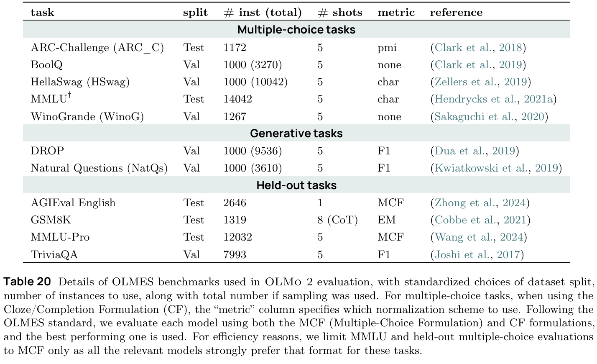
多项选择任务。我们使用 OLMES 评测标准（Gu et al., 2024）定义的十项多项选择任务的形式。OLMES（开放语言模型评测标准）是一套用于可复现语言模型评测的原则与相关标准（在 OLMES 系统框架中提供参考实现），具有开放、实用、文档完备的特点，提供由实验和文献结果引导的建议（Biderman et al., 2024; Gao et al., 2023）。在多项选择任务上，它旨在支持比较两类模型：需要完形填空或补全式多项选择问题的小基础模型（分别为每个答案补全评分），以及能够使用多项选择形式的大模型。为使评测可复现，我们在提示格式、上下文示例选择、概率归一化与所有其他细节上遵循 OLMES 标准。更多细节见表 20 及 Gu et al.（2024）。
生成任务。遵循 OLMES（Gu et al., 2024）的原则，如提示格式和五个精选上下文示例，我们还在生成任务套件 OLMES-Gen 上评测。该套件涵盖事实知识任务（Natural Questions; Kwiatkowski et al., 2019，以及 Jeopardy; MosaicML, 2024）与阅读理解任务（SQuAD; Rajpurkar et al., 2016，DROP; Dua et al., 2019，以及〔接下一页〕
35 OLMES（开放语言模型评测系统）框架见 github.com/allenai/olmes。
〔接上一页〕CoQA; Reddy et al., 2019）。CoQA 的任务是提供一个段落及截至当前的对话，每轮对话包含问题与答案。在此情况下，之前的问答对引导模型采用相应输出格式，不再加入额外 few-shot 示例。其他任务均遵循 OLMES，采用五个精选上下文示例。由于这些任务的标准答案列表通常不完整，我们以 F1 为主要指标，在模型答案部分匹配时给予部分分数。OLMES-Gen 的任务细节概述于表 20。
留出任务。我们也在模型开发决策中未使用的留出任务套件上评测。包括高级入学与资格考试（AGIEval English36; Zhong et al., 2024）、被认为对语言模型有挑战的任务（BigBenchHard, BBH; Suzgun et al., 2022）、数学推理（GSM8K; Cobbe et al., 2021）、更有挑战且更侧重推理的 MMLU 扩展（MMLU Pro; Wang et al., 2024），以及未见事实知识任务（TriviaQA; Joshi et al., 2017）。如有可用的现有上下文示例则使用它们：GSM8K 使用 Wei et al.（2023）的八个 CoT 示例；BBH 使用原始数据集的三个 CoT 提示；MMLU-Pro 使用原始数据集的五个示例。AGIEval English 使用 1-shot 提示（带段落上下文，无 CoT），TriviaQA 使用从训练集人工精选的五个示例。请注意，开发阶段从未在整个 GSM8K 测试集上评测模型，而是用 200 个示例指导开发选择（如退火混合选择）；§4 将这一 200 示例子集称为 \(\mathrm{GSM}^{*}\)。
全部实现公开于 github.com/allenai/olmes。
A.2 指令模型评测
指令任务。我们依据当前文献中的既有实践，使用 OLMES 基准套件（Gu et al., 2024），采用 Lambert et al.（2024）报告的配置，进行指令模型评测。
指令任务与配置列表见表 21。包括留出任务的聊天变体（GSM8k; Cobbe et al., 2021，BBH; Suzgun et al., 2022）、额外长尾知识（PopQA; Mallen et al., 2022）、误解（TruthfulQA; Lin et al., 2021）和指令遵循任务（IFEval; Zhou et al., 2023，AlpacaEval 2; Dubois et al., 2024）。MMLU 指令评测采用 Lambert et al.（2024）的 CoT 版本，使用其要求模型在回答前“概述”推理的提示。Python 代码补全（HumanEval; Chen et al., 2021，HumanEval+; Liu et al., 2023b）与竞赛 MATH（Hendrycks et al., 2021b）使用 OLMES 中相同设置与答案提取方式。
B OLMo 2 1B
虽然本工作的目标是为 7B、13B、32B 目标规模开发方案，但在 1B 模型规模进行实验往往有用。OLMo 2 1B 的定义类似 OLMo 2 7B，但有以下差异：
- 层数：16，而非 32。
- 隐藏维度（\(d_{\mathrm{model}}\)）：2048，而非 4096。
- Attention 头数（Q/KV）：16/16（MHA），而非 32/32（MHA）。
- Batch size：512，而非 1024。
- 峰值学习率：\(4.0\cdot10\mathrm{E}^{-4}\)，而非 \(3.0\cdot10\mathrm{E}^{-4}\)。
B.1 OLMo 2 1B 的困难
我们使用 OLMo 2 1B 模型（附录 B）开发 OLMo 2 方案，发现结论能够良好泛化至 7B、13B 和 32B 规模，表 6 的竞争力结果证明了这一点。然而，〔接下一页〕
36 具体八项任务：aqua-rat、logiqa-en、lsat-ar、lsat-lr、lsat-rc、sat-en、sat-math、gaokao-english。
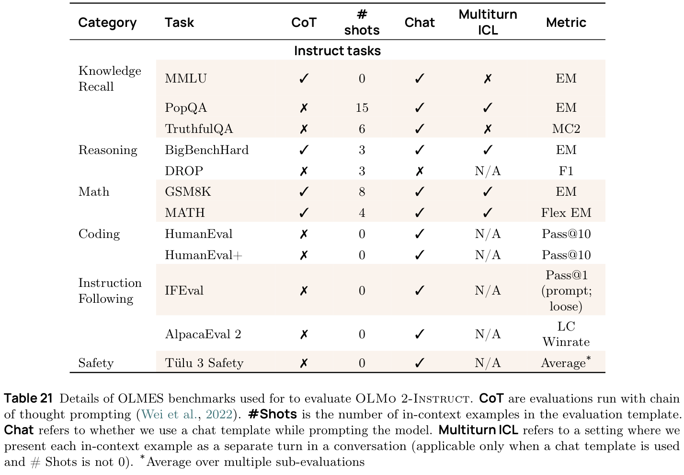
〔接上一页〕我们发现，扩展 OLMo 2 1B 的训练 token 数量很困难。
训练。我们在 OLMo 2 Mix 1124 上预训练 OLMo 2 1B 至 4 万亿 tokens，并在 Dolmino Mix 1124 上进行单次 50B token 退火。与 OLMo 2 7B 类似，使用 2000 步 warmup，将调度设为 5 万亿 tokens，但在 4 万亿处截断。峰值学习率更高，为 \(4.0\cdot10\mathrm{E}^{-4}\)。
基础模型结果。表 22 给出主要基础模型评测套件的实验结果。虽然 OLMo 2 仍能与 SmolLM 2 等同规模模型竞争，但落后于较小的 Gemma 2 与 Qwen 2.5 基础模型。
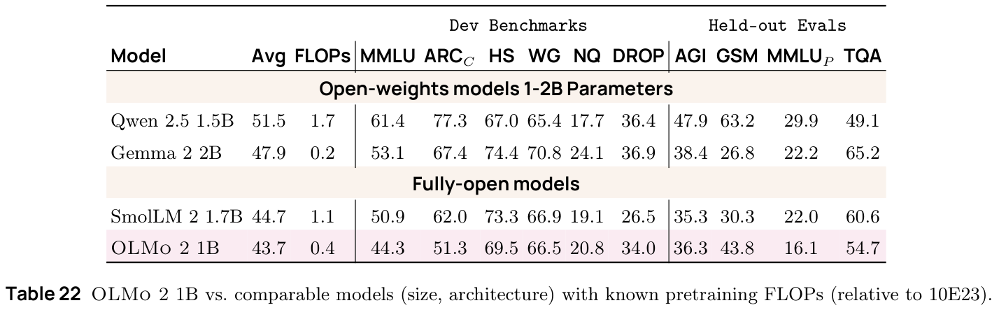
分析。我们推测，模型容量可能导致 OLMo 2 1B 的预训练 token 效率不足。OLMo 2 小于 Qwen 2.5〔接下一页〕
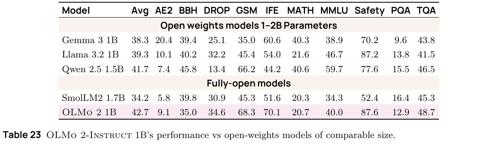
〔接上一页〕或 Gemma 2 等其他有竞争力系列的最小版本。我们假设，低于某个模型规模时，最优预训练方案可能需要纳入 SFT 中那样的任务特定数据，才能在评测套件的较难任务上取得超过随机的表现。也可从更强模型蒸馏来提高性能，较小 Gemma 2 模型采用了这一策略。
例如，表 9 显示，较小基础模型从 Dolmino Mix 1124 中获得的收益更大：1B 为 +37.0%，7B 为 +18.7%，13B 为 +15.9%，32B 为 +12.3%。结果也显示，仅经过阶段 1 预训练的 OLMo 2 1B，在多项选择格式任务上很难突破随机表现（MMLU 与 ARC Challenge 为 25%，MMLU Pro 为 10%）。
表 23 提供了进一步证据：对 OLMo 2 1B 应用相同 OLMo 2-Instruct 后训练方案，得到的 OLMo 2-Instruct 1B 具有极强竞争力，甚至可与 Qwen 2.5 乃至 Gemma 3 竞争。
C 补充指令模型细节
C.1 补充超参数
用于生成 OLMo 2-Instruct 偏好数据的所有模型列于表 25。偏好数据集的提示来源列于表 27；内容的更多信息见 Lambert et al.（2024）。用于训练奖励模型、以初始化 RLVR 价值网络的超参数见表 26。
C.2 补充 RLVR 学习曲线
额外 13B RLVR 学习曲线见图 18、19、20。
C.3 OLMo 2-Instruct 预览模型
本报告之前，我们已进行了初次发布37。然而，发布后不久发现 tokenizer 问题：基础模型的预分词逻辑与指令模型的 tokenizer 不同。
具体而言，OLMo-2 基础模型采用 GPT2Tokenizer 类，包含自定义预分词逻辑（如序列拆分或截断），该逻辑在指令模型训练期间丢失。图 17 展示基础模型与指令模型 tokenizer.json 的文件差异。
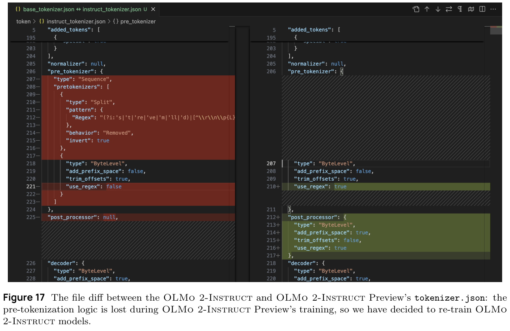
因此，我们决定重新训练 OLMo 2-Instruct，使之与基础模型一致，并将现有后训练模型标记为预览模型。
不过，OLMo 2-Instruct Preview 学习曲线仍可在图 21、22 中找到。
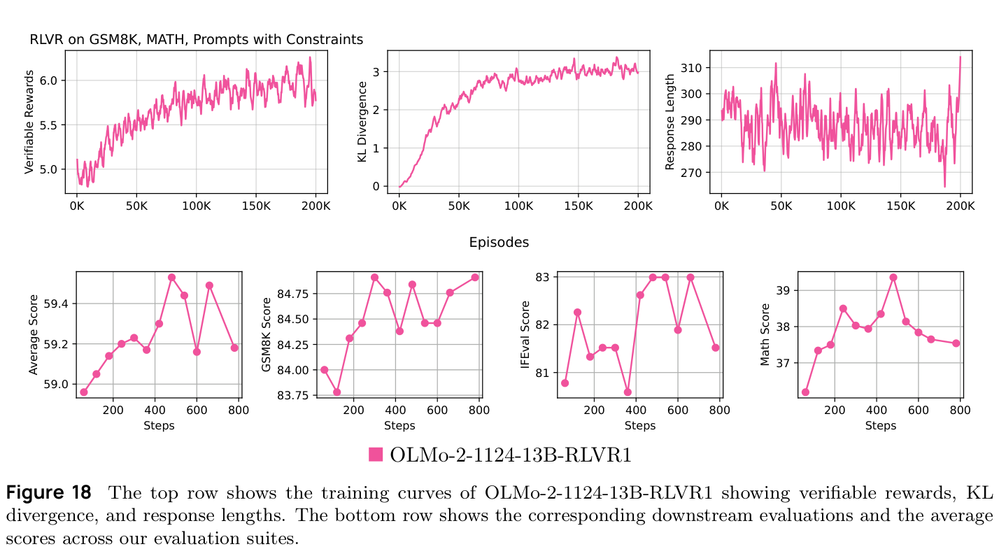
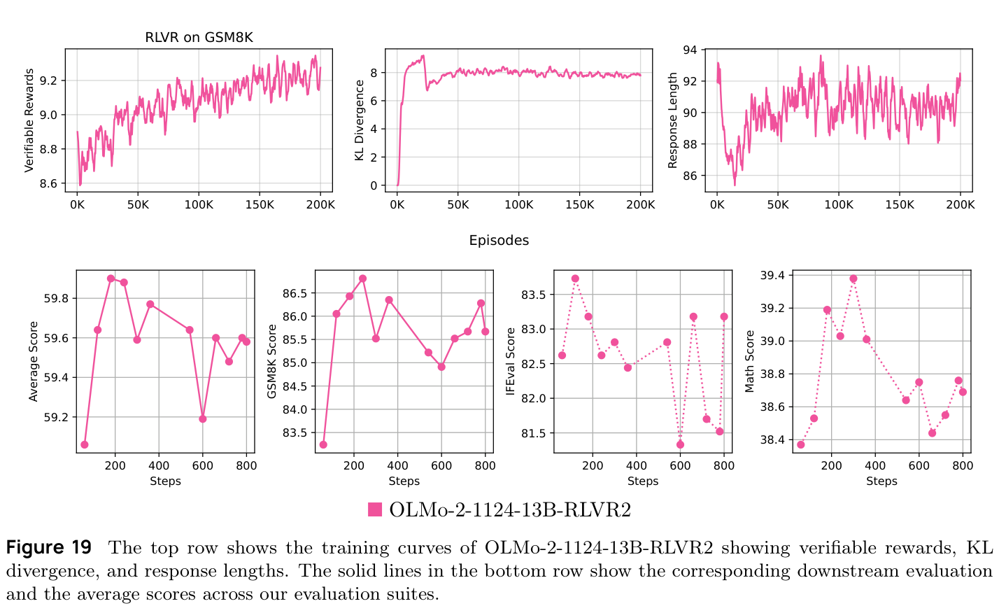
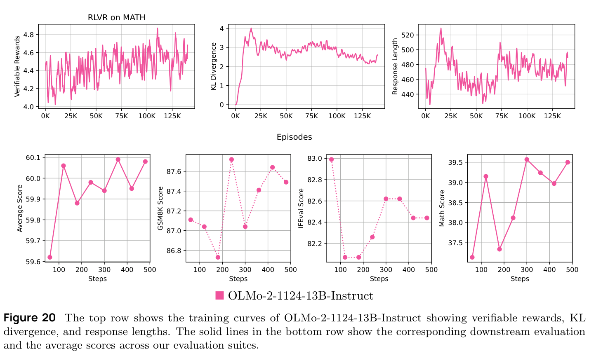
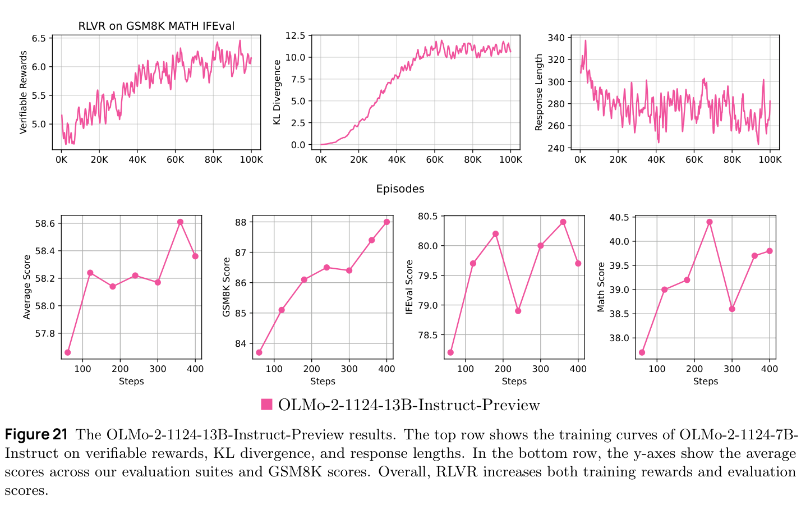
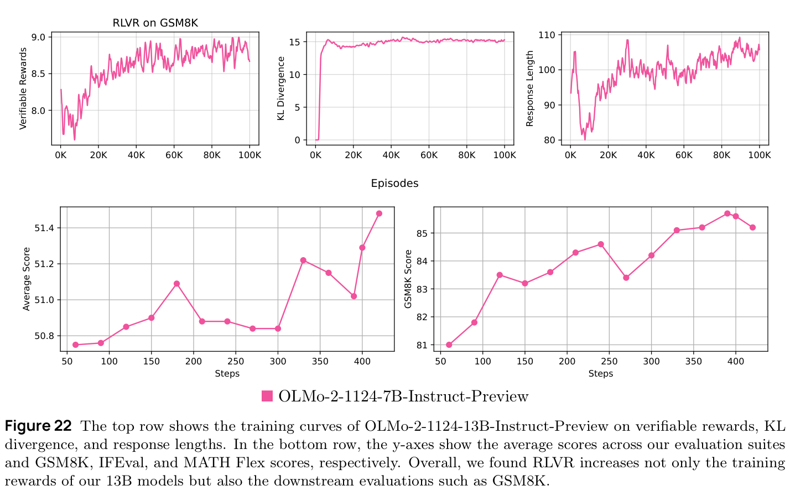
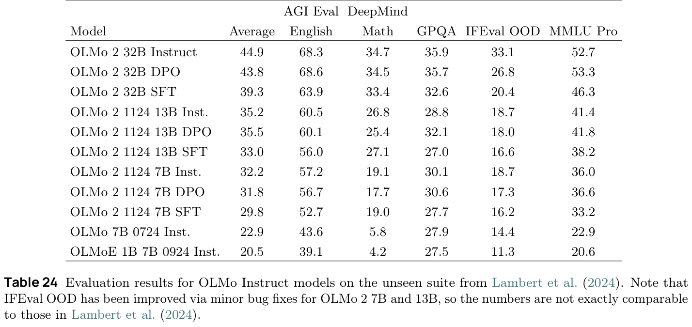
D 补充超参数
用于生成 on-policy 偏好数据的模型列于表 25。
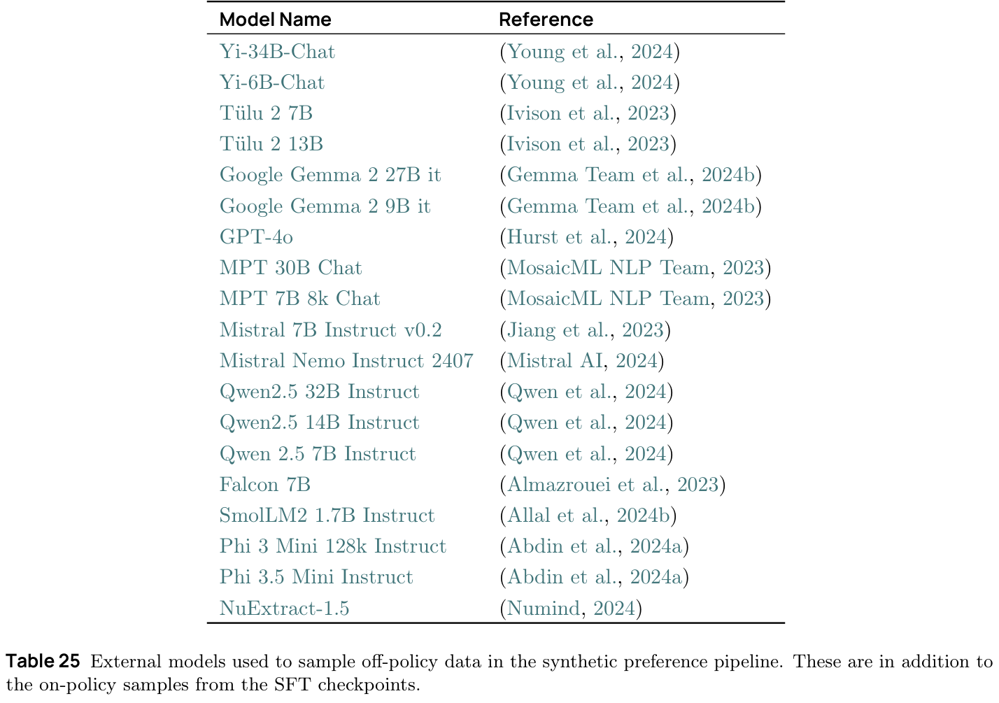
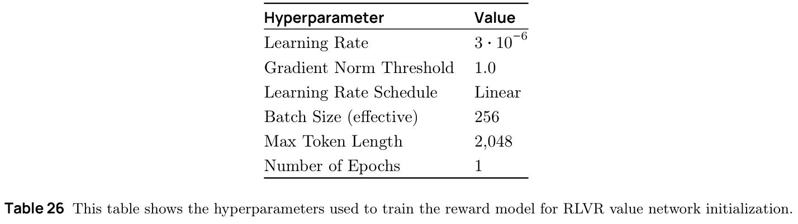
本页原文链接
- https://huggingface.co/01-ai/Yi-34B-Chat
- https://huggingface.co/01-ai/Yi-6B-Chat
- https://huggingface.co/allenai/tulu-2-7b
- https://huggingface.co/allenai/tulu-2-13b
- https://huggingface.co/google/gemma-2-27b-it
- https://huggingface.co/google/gemma-2-9b-it
- https://platform.openai.com/docs/models#gpt-4o
- https://huggingface.co/mosaicml/mpt-30b-chat
- https://huggingface.co/mosaicml/mpt-7b-8k-chat
- https://huggingface.co/mistralai/Mistral-7B-Instruct-v0.2
- https://huggingface.co/mistralai/Mistral-Nemo-Instruct-2407
- https://huggingface.co/Qwen/Qwen2.5-32B-Instruct
- https://huggingface.co/Qwen/Qwen2.5-14B-Instruct
- https://huggingface.co/Qwen/Qwen2.5-7B-Instruct
- https://huggingface.co/tiiuae/falcon-7b-instruct
- https://huggingface.co/HuggingFaceTB/SmolLM2-1.7B-Instruct
- https://huggingface.co/microsoft/Phi-3-mini-128k-instruct
- https://huggingface.co/microsoft/Phi-3.5-mini-instruct
- https://huggingface.co/numind/NuExtract-1.5
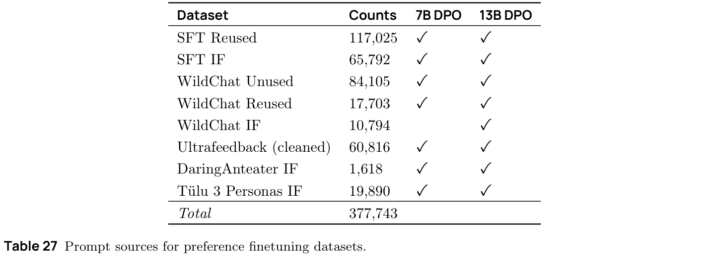
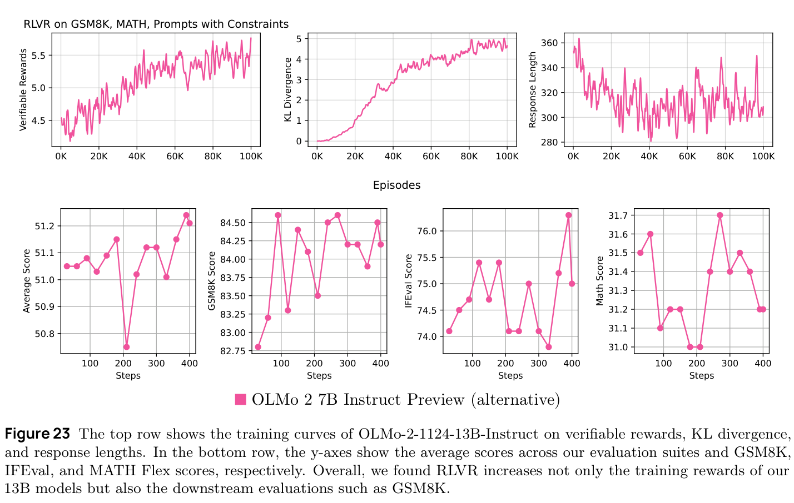
E 退火数据细节
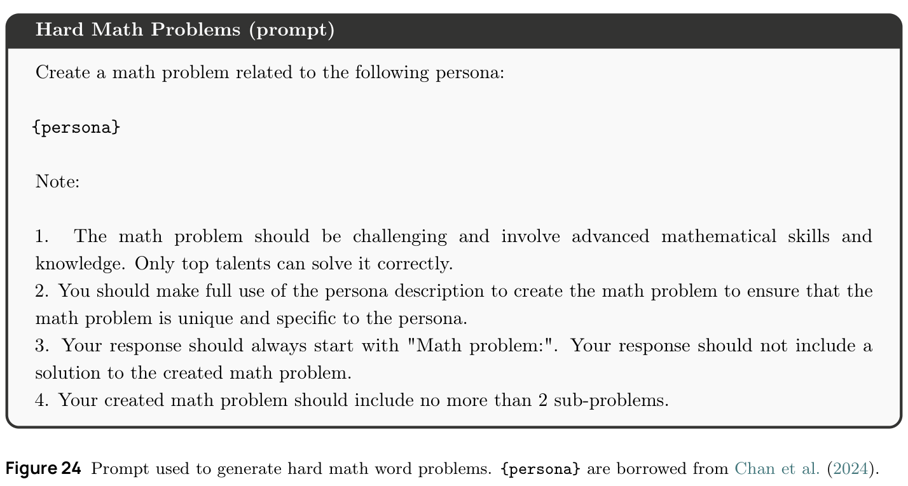